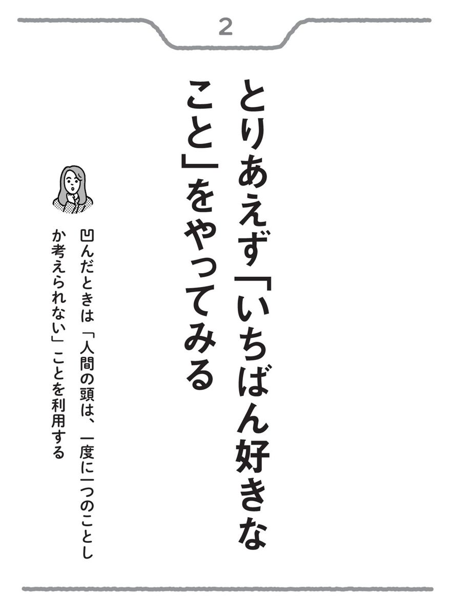
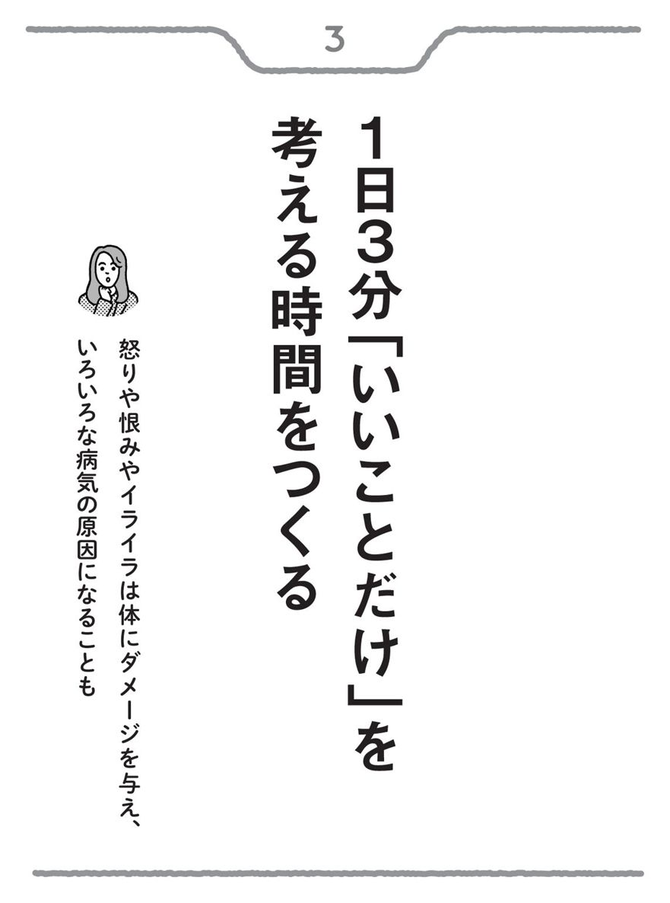
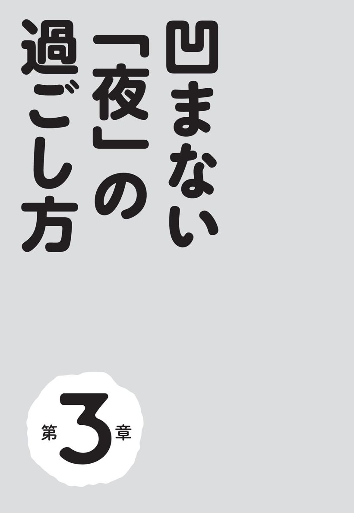
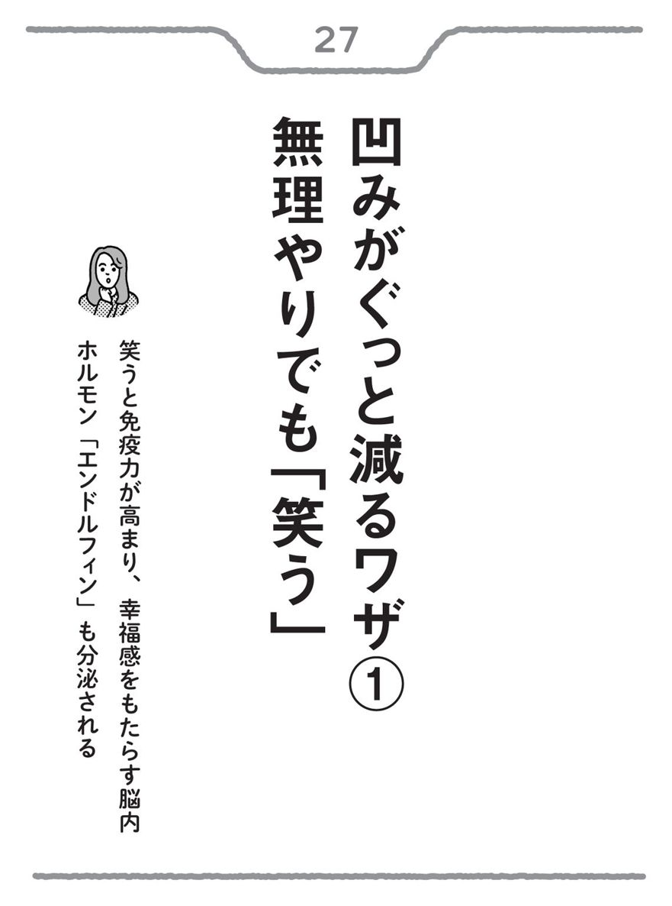

| 凹んだら読む本 | |
| 治面地 順子 | |
| (2016) | |
▼ はじめに
普段は明るい人でも、ふとした瞬間にくもった表情をしていること、ありますよね。
日々、生きていると、思わず「はぁ......」とため息が漏れてしまうような凹む出来事はたびたびあるものです。
「え、そんなに凹むことなんてないよ？」――もしあなたがそういう幸せな人であれば、おめでとうございます。この本はあまり必要ありません。
私は多くの企業や官公庁で、メンタルヘルスやストレスマネジメントに関する研修を20年くらい行ってきました。また、「身体と心の癒し」「健康」をテーマに、セラピストやインストラクターを育てるアカデミーを主宰したり、うつの改善や予防をめざす「メンタルセラピー」の普及活動などにも携わったりしています。
仕事柄、年齢や性別を問わず、働いている方から主婦の方まで、お悩みをお聞きする機会が多々ありますが、「ちょっとしたことで凹みがちな人は、意外なほど多い」ということを実感しています。
たとえば、心配性な人。物事をマイナスに捉えてしまう人。すぐ自分を責めてしまう人。枝葉にこだわりすぎて失敗が多い人。小さなことにイライラしてしまい、あとでそれを後悔してしまう人。慎重に動こうとして、かえってチャンスを逃してしまう人......。
こうした方々に共通している点は、主に二つあります。
一つは〝真面目な人が多い〟ということ。つらい思いを抱えてご相談にいらしたのに、悩みをお聞きしていると、「こんなことを相談していいのかな」「あぁ、もっとしっかり言葉にしないと」という思いが話の端々に表れてくるような、心のやさしい方が多いのです。しんどいときに、こうした心遣いが他人にできること自体、とても素敵なことです。でも、現代のストレス社会の中では、少し生きにくいのかもしれません。
そしてもう一つは〝自己肯定感が低くて、自分を過小評価している人が多い〟ということです。「自己肯定感」というのは、読んで字のごとく、自分のことを長所だけでなく短所も含めて肯定する感覚のこと。これが低い人は、お話ししていても自信のない感じで、たとえば「私のような人間の話を聞いていただいて......迷惑ですよね」みたいなことを口にされたり、お話の途中で「すみません」とか「ホントにダメですよね、私」といった言葉が繰り返し出てきたりする方もいます。こうした人は、ただでさえ自分に自信がないだけに、ちょっとした他人の言動でも傷つきやすい心の持ち主でもあるのです。
私からすれば、これらの方々も、自分自身の「考え方」や「ものの捉え方」をちょっと変えるだけで、もっと楽に、楽しく生きられるのにと、もったいなく思ってしまいます。
そればかりか、こうした人たちは、うつなどの心の病気になってしまう場合もあります。いまや、国内でうつの患者が１００万人、精神疾患で通院する人が３２０万人といわれる一大ストレス社会なのですから。
ストレスは、一度に大きな塊がドンとのしかかってくるというよりは、毎日の生活の中で知らず知らずに小さなストレスが積み重なっていって、ある日、突然、病気の症状が身体や心に表れてくることが多いものです。
そういう意味では、心の病気も「生活習慣病」なのです。
生活習慣病は、食事の食べ方やお酒とのつき合い方、睡眠のリズム、体重管理など、毎日の生活をちょっと工夫することで避けることができます。同じように、毎日の生活の中で凹んでしまったとき、ちょっとした方法でマインドを微修正していくことで、心の病気にならずに済みます。
この本では、さまざまなストレスからあなたの心を守るために、凹んだときに素早く回復する、あるいはそもそも凹みにくいマインドをつくるためのコツを34個、紹介します。凹みからリカバリーするための考え方、朝・昼にすること、夜の過ごし方など、毎日の生活の中で簡単に取り入れられることを中心にまとめました。目次をご覧いただいて、どれか気に入った項目から読んでもかまいません。
人生は山あり谷あり、いろんなことが起こります。これまで思い通りに行かないこと、失敗することも多々あったでしょうし、これからもあるのは避けられません。そんなことで凹んだとき、この本で紹介している方法を、まずは一つ、試してみてください。
２０１６年２月
治面地 順子
もくじ 凹んだら読む本
精神的にストレスやダメージを受けても、凹みやすい人と凹まない人がいます。
その違いはなんでしょうか。
それは、ストレスやダメージをうまくコントロールできる人とできない人の違いです。
いま、ストレスが原因で、身体や心の不調を訴える人たちが本当に増えています。でも、実はストレスには〝よいストレス〟と〝悪いストレス〟があります。要は、ストレスそのものが身体や心にダメージを与えるのではなく、「それをどう捉えるか」によって、結果は大きく変わってくるのです。
たとえば、いままでの仕事が認められて課長に抜擢されたとします。「課長に選ばれたし、これからもどんどん仕事をがんばっていこう」と思う人にとっては、課長になったことは〝よいストレス〟になります。それに対して「課長に選ばれたけど、自分は本当にやっていけるんだろうか......」と不安に感じる人にとっては、課長に指名されたことは〝悪いストレス〟になります。
このように、「課長になったという出来事」がダメージを与えるのではなく、それをどう捉えるかによって、プラスにもなり、マイナスにもなるのです。
ストレスというものは、言ってみれば、自分がつくり出している「概念」にすぎません。凹みやすい人は、どうしてもいろいろな事象をマイナスに捉えがち。一方、凹まない人は、それをプラスに捉えて前向きに対処しようと考えます。
これは、「捉え方」をちょっと変えてみるだけで、かなり解決できます。起きたことは何も変わらなくても、捉え方が変われば、ストレスなく、あるいはストレスをだいぶ緩めて、そのことを受け入れることができるようになります。
この本では、そうした「捉え方」を変えたり、自分の中でマイナスをゼロに、ゼロをプラスに変えたりしていくためのヒントを紹介していきます。
▼ 「ストレスがかかるとどうなるか」は、３つのタイプに分かれる
「ストレス」という言葉は、いまから80年ほど前に、カナダのハンス・セリエ博士という生理学者が提唱した言葉だそうです。医学的には、環境因子（ストレッサー）が心身になんらかの影響を与えて、身体や精神に「ひずみ」が生じた状態をいいます。
われわれの心身に影響を与えるストレッサーは、大きく２つに分類されます。
① 外部的ストレッサー
・タバコ、アルコール、排気ガス、花粉、カビ
・就職、転職、結婚、離婚、仕事や家庭生活のトラブル など
② 内部的ストレッサー
・人間関係、不安、心配、飲み過ぎ、食べ過ぎ、過労 など
①は私たちを取り巻く環境の中にあるもの、②は自分で自分自身にストレスを与えているものです。これらが、朝起きてから夜寝るまで、私たちの身体や心に刺激を与えます。こうしたストレッサーを受けると、いろいろなストレス症状が表れてくるわけです。
基本的にストレス症状は「その人のいちばん弱いところ」に表れるといわれ、この表れ方には、主に３つのタイプがあります。
ストレスがかかると、肩がこったり、腰が痛んだり、目が疲れたりする人は「筋緊張型タイプ」。それに対して、ストレス状態になると、おなかが痛くなったり、下痢になったり、便秘になったりと、おなかに反応が表れるのが「胃腸型タイプ」。同じく、めまいや動悸が激しくなったり、眠れなくなったりするのが「自律神経型タイプ」です。
これらの反応は、性格にも関連していると考えられています。
筋緊張型タイプの人は、がんばり屋さんに多いのです。胃腸型タイプはまわりに気を使う、ちょっと神経質な人。自律神経型タイプは完璧主義者が多いといわれます。あなたはどのタイプでしょうか？
このような身体の反応は、いわば私たちに「いま、ストレスがかかっていますよ」と警告をしてくれているのです。
▼ 一時的に落ち込むのは、誰でもあること
やっかいなのは、こうしたストレス状態が続いていても、一時的に快方に向かっているように感じるときがあることです。
実は、私たちの身体には、温度など身体の外の環境が変わっても、体内の状態を一定に保とうとする〝ホメオスタシス（恒常性維持）〟と呼ばれる働きが備わっています。これは、多少の不調があっても、もとの元気な状態に戻ろうとする力となります。この作用によって、一時的に快方に向かっているように感じるのです。
それでもストレス状態が続いていると、私たちの心身はついに疲れ果ててしまい、身体や精神にいろいろな病気の症状が表れます。
いま、いちばん問題になっているのがうつです。うつの症状は次のようなものです。
・身体の症状......不眠、食欲不振、性欲減退、疲労感、頭痛、肩こり、便秘、下痢
・精神の症状......無力感、判断力低下、記憶力低下、仕事の能率低下、ミスが増える、自殺願望・実行
なんだか、見ているだけで凹んでしまいそうですよね......。
ちなみに現在、精神科で、うつかどうかの判定に使われているのは、次のような９つの基準です（「精神障害の診断と統計マニュアル」より）。こちらも、当たり前ですが、なんだか凹むような項目がいっぱい並んでいます。
① ほとんど一日中抑うつ気分
② 興味や喜びの喪失
③ 体重の増加や減少
④ 睡眠障害（不眠または睡眠過多）
⑤ 焦燥（あせり）や抑制（のろさ）
⑥ 疲労感、気力減退
⑦ 自分を価値のない人間と思う罪悪感
⑧ 思考力、集中力、決断力の欠如
⑨ くり返す死の願望
これらの項目のうち、①か②を含めて５つ以上が２週間続いていると答えると、「うつ」と診断されて、薬が出されます。でも、よくよく見てみると、誰でもこんな症状になったことって、ありませんか？
たとえば、仕事で大きな失敗をしたとき、失恋したとき、大きく凹んだとき。そんなときには誰でも、眠れなかったり、食欲がなかったり、一日中、落ち込んだ気分になったりしたことがあるはずです。
「薬を使わない精神科医」として活躍する湯島清水坂クリニック院長の宮島賢也先生は「うつかどうかは〝病院に行ったかどうか〟で決まる」と話しているくらいです。
２０１５年の12月から、従業員が50名以上の企業では、「労働安全衛生法に基づくストレスチェック制度」が義務づけられました。今後、多くの企業の健康診断には、ストレスチェックの項目が加わることでしょう。
問題はこの「ストレスチェック」でうつの傾向が見つかった人たちへの対応の仕方です。
うつ傾向の人たちが精神科や心療内科に送られたら「薬漬け」になり、薬の副作用で苦しむ人がさらに増えるのではないかと個人的に心配しています。
政府がこうしたストレスチェックを義務づけるという背景は、メンタルに不調を抱える人たちがいかに多いかということです。実際、いま精神疾患で通院している人が３２０万人、そしてその予備軍が１０００万人もいるといわれています。
ここまで見てきたように、メンタルの不調の誘因はストレスです。自分自身で避けられるストレスがある一方で、避けようのないものもあります。つまり「ストレスを受けたとき、自分自身でどうコントロールしていくか」が大切なポイントなのです。
人生、常に順風満帆なことはありません。凹むことも、嬉しいこともあったりしながら、一つひとつ乗り越えて人生を歩んでいます。どんなに凹んだときも、そこから脱するワザを身につけていれば、長い間、心にダメージを受け続けたり、それによって、うつで悩んだりすることもないはずです。
いま、もし何かで凹んでいても、次はいいことがやってくるかもしれません。私だって凹むことはあります。でも、人生を長いスパンで考えられるようになると、目先の失敗や成功で一喜一憂することがなくなります。
このように、自分の人生を客観視するために役立つ習慣を一つ紹介しましょう。
凹んだ感情の真っ只中にいると、なかなかそこから抜け出せません。でも、人生を「自分が主演の映画」だと考えてみるとどうでしょう。一人の観客としては、何もない人生をただ淡々と描いた映画は退屈だという方がほとんどではないでしょうか。やはりいろいろドラマがあったほうが楽しそうです。こう捉えると、凹んだときも「次のシナリオはどうなるんだろう」と未来を考えることができます。
人が行動を起こす真の動機は、次に挙げる「人間の６つの欲求」にあるそうです。これらの欲求を満足させるために、人は人生を歩んでいくのかもしれません。
① 安定感......安定したい
② 不安定感......変化がほしい
③ 重要感......価値ある存在でありたい
④ 愛とつながり......愛されたい、誰かとつながりを持ちたい
⑤ 成長......成長したい
⑥ 貢献......何かに貢献したい
ベースとしての「安定感」も大事ですが、冒険したり、ときには危機に見舞われたり、それを乗り越えて旅をする人生――そんな意味では、人生のスパイスとして「不安定感」も必要です。
また、ほとんどの人は、他人から「価値ある人間だ」と思われたいし、自分は特別だと思いたいもの。そのために勉強や仕事に努力する人も多くいるでしょう。
「恋愛」もドラマの大切な要素。いろいろ障害があったけど、初恋の人と最後に結ばれる。大失恋を経ていまのパートナーと巡り合い、幸せに暮らしている。これもドラマです。
いくつになっても「成長したい」という欲求もあります。私が仕事をしながら博士課程を受験したのも、この欲求のせいかもしれません。
あなたにとって人生の目的はなんでしょうか。「なんのためにこの世に生まれてきたんだろう」と考えたことはありませんか。この世の中に生まれて、少しでも人の役に立てたらうれしいという人も多くいます。人の最終目的は何かに貢献することかもしれません。
たった１本しかない「自分主演の映画」。こうした要素をはさみながら、面白くするのも、つまらなくするのも、あなたの心一つです。
たとえば「本当は社長になりたかった」という人。いま勤めている会社の社長になるのが無理なら、自分で会社をつくって社長になる。サラリーマンを辞められないなら、週末だけ会社経営をする〝週末起業家〟になるという方法もあります。あるいは「本当は写真家になりたかった」。それなら〝日曜カメラマン〟から始めてもいいかもしれません。
考えるだけ、夢を見るだけではつまらないもの。実行することが、あなたの世界をさらに広げます。あなたの「未来のドラマ」をつくっていくのはあなた自身。少しずつでもいいので、できることから手をつけてみましょう。
人生は壮大なドラマです。せっかくなら、いままでの人生では考えてもみなかったこと、本当に実現したらワクワクすることを考えてみませんか。

あなたにとって、いちばん好きなことはなんですか。何をしているときがいちばん楽しいですか。
凹んだときは、心が沈み込んで、悪いほうへ悪いほうへと考えていませんか。そして、ますます苦しくなっていませんか。そんなときは、自分にとっていちばん好きなこと、好きだったことを考えてみましょう。
人間の思考は、一度に一つのことしか考えられません。どんなに凹んだときでも、いちばん好きなことを考え始めると、凹んだことを考えることができないのです。思考の転換を図るためには、凹んだ理由や漠然とした恐れ、悩みから離れるために、あなたにとって「いちばん好きなこと、楽しいこと」を考えることです。
当たり前ですが、苦しいことや辛いことを考えるより、好きなことや楽しいことを考えるほうが、ずっと気持ちが楽になります。
人生は辛く苦しいものだと考えている人がいます。その考え方はいつから始まったのでしょうか。誰から教わってきたのでしょうか。子どものころは何も考えずに毎日過ごしていたのではないでしょうか。あなたは子どものころ、何をして遊んでいましたか。何をしているときがいちばんワクワクしていましたか。
楽しいこと、好きなことを考えるだけでも、脳から「ドーパミン」という物質が分泌され、やる気が出てきます。
ドーパミンは中枢神経系で働く神経伝達物質です。脳の前頭葉の中で、快感などを生む「報酬系」と呼ばれるしくみなどと深く関わり、何かをする意欲や学習などと密接に関わっているといわれています。
報酬系のドーパミンを分泌させるためには、たとえば、カラオケで好きな歌を歌うことも一つの方法。大事なことは「自分の好きな歌を歌う」という点です。その歌への感情も相まって、ドーパミンが放出されるのです。おいしいものを食べることも効果的。おいしいものや自分の好物を食べると、同じく脳内にドーパミンが分泌されます。
要は、自分にとって「嬉しい」行動をするといいということ。「嬉しい」「楽しい」は脳がいちばん喜ぶご褒美。何か「自分にご褒美を与える」ことをすれば、脳内でのドーパミンの分泌が増えるのです。
あなたの好きなことはなんでしょう？ カラオケや美食のほかにも、たとえば犬と遊ぶこと、ショッピングすること、模型飛行機を飛ばすこと、本を読むこと、旅をすることなど、人によってさまざまな「好きなこと」があるでしょう。とりあえず、「いちばん好きなこと」を、できることからやってみましょう。
私はもともと国際線のキャビンアテンダントをしていましたが、それは現在の肩書であるスポーツ医学博士とは結びつかないと思います。私はそのときそのときで、好きなことをやって、好きなことを勉強してきて、結果的にそうした学位まで取ってしまいました。
人生は山あり谷ありです。凹むこともありますが、つらいことばかりでもありません。だからこそ、凹んだときに凹んだ状況からいかに抜け出すかがポイント。そのためのキーワードの一つが「好きなこと」なのです。
あなたはいま、どうなりたいと思っていますか。どうしたいと思っていますか。どんな人にとっても、人生は楽しむためにあるのです。凹んで苦しむためにあるのではありません。好きなこと、楽しいことを考えてみましょう。

「好きなこと」や「楽しいこと」を考えましょう、やってみましょうと言われても、その習慣がない人は、少しとまどってしまうかもしれません。
ですので、まずは習慣化することから始めます。それには、１日３分でいいので「いいことだけ」を考える時間をつくることです。
習慣化するためには、決まった時間を設けるのも一つの方法。たとえば電車で通勤している人だったら、朝、電車に乗ったら３分間、「いいことだけ」を考える時間をつくります。考えるだけですから、満員電車に揺られてギュウギュウ詰めの状態でも実行できます。毎日、満員電車に揺られていると「あぁ、今日も混んでるよ。なんでこんな思いをして通勤しなきゃいけないんだろう」「こんな人生、イヤだなぁ」なんて凹んでいませんか。
それを３分「いいことだけ」を考える習慣をつけるだけで、１日が確実に変わります。
「いいこと」は、ほんのちょっとしたことでかまいません。
たとえば、朝起きて、駅へ行くまでに出合った「ちょっといいこと」です。道端に咲いていた小さな花。通りすがりの子犬。コーヒーショップの店員さんとの会話。
奥さんのいる人だったら、たとえば週末に特別な料理をつくってくれたことを思い出してみる。お子さんのいる方なら、昨日の夜に見たお子さんの幸せそうな寝顔を思い浮かべてみる。
ほんのちょっとした「いいこと」を考えるだけで、心は和みます。
また、今日これから起こりそうな「いいこと」を考えてみるのも、凹まないためのちょっとした技術です。午前中の企画会議で、きっと自分の企画書が通るんだと考えてみる。午後からの商談もきっとうまくいく。今晩のデートはきっと楽しくなる。こんなふうに「いいことだけ」を考えるのです。
実際にダメになったり、うまくいかなかったりしたら、それはそのとき。とくに凹んだときは、まだ何も起こっていないのに、悪いことを考えたり、心配したりしがちです。「きっとうまくいく」。そう考えることが、心を健康にします。
私は、前述の「薬を使わない精神科医」宮島賢也先生が提唱する、心を健全に保つために思考や食の習慣を見直し、うつなど心の不調を予防・改善する「メンタルセラピー」というメソッドを広める活動をしています。宮島先生は、「うつや統合失調症などの精神疾患だけでなく、がんやリウマチなどの患者さんも心配症が多い」と言います。まだ起こってもいないことを心配したり、悩んだりして、自分の心や身体に負担をかけ、自分で病気をつくっている人が多いということです。
あなたにも、怒ったり、人を恨んだり、イライラしたりして、胃がキューっと痛くなった経験はありませんか。身体は正直です。感情は、身体にも大きな影響を与えます。がんやリウマチ、うつなど、病気と名のつくものの80％はストレスが原因という説もあります。
ストレスを撃退するためにも、「いいこと」を考えるのは効果的です。
私はあまり怒ったり、恨んだり、イライラしたりしないことにしています。これは、実は自分のためでもあります。我慢強いとか精神力があるとかとは別の話で、「怒りや恨みやイライラは、身体にダメージを与え、いろいろな病気の原因になる」ということを知っているからです。
悪いことを考えたり、心配したりするより、起こったらうれしいこと、楽しいことを考えませんか。そして、それを習慣化しませんか。
凹まないために、１日３分「いいこと」を考える時間をつくりましょう。
凹んでいるときは自分が好きになれません。「また、仕事でミスしちゃった」「商談がうまくいかなかった」「また、彼女に振られた」「やっぱり俺ってダメなんだ」「私ってダメなんだ」――そんなふうに考えていませんか。
私は仕事柄、「自分が好きになれない」という人にもたくさんお会いします。そんなとき「なんてもったいない」と思ってしまいます。
そうした人は、なぜ自分が好きになれないのでしょうか。その原因は、これまで生まれ、育ってきた歴史の中にあるのかもしれません。両親の期待が高く、いつもいい点数を取ることを求められたり、いい子でいることを期待されたりしていたのではないですか。それに自分が適合できないと、「自分はダメだ」「私は価値がない」という思いに駆られてきてしまったのではないでしょうか。
私のもとに相談にいらっしゃる人たちの中には、お父さんかお母さんに、ときにはご両親に伴われて来られる方も多くいます。うつや引きこもりになっているお嬢さん・息子さんを連れて来られる親御さんの中には、話しぶりや実際に話されている内容から、学歴が高く、エリートサラリーマンに違いないという風情のお父さんや、やさしそう、面倒見のよさそうなお母さんもたくさんいて、「こんなご両親に育てられたら、きっと素晴らしい子どもになるだろう」と思われる人たちが意外なほど多いのです。
しかし、経済的にも恵まれ、何不自由なく育ってきたであろう、そうした人たち（30代・40代が多い）がいま、心の不調に悩んでいます。
そうした人の多くは、自己肯定感や自己効力感が低くなってしまっているのです。両親が立派すぎて、親を超えられない。あるいは、いくつになっても親に認められないという「自己肯定感の低さ」が心を蝕んでいるように思えます。結婚して、子どももいるのに、「実家に帰ると、いまだに親に認められていない」と泣いていた女性もいました。
とはいえ、親は親なりに、子どもを大切に思い、立派になってほしいと願っているだけ。「親に認められない」あるいは「上司に認められない」などと他人の評価ばかりを気にせず、自分らしく生きることが、結局は自分にとってもいちばんいいのです。
失敗したり、うまくいかなかったりしたときは、今度がんばろうと思えば、それでいいのではないでしょうか。まず、自分の「いいところ」「好きなところ」を挙げることで、自己肯定感を高めてあげることが大切です。
そのためには、定期的に自分の「好きなところ」を挙げて、自分自身への肯定感を育ててください。月に１回でもかまいません。忘れないように給料日の25日、自分へのご褒美として、ちょっと奮発して、おいしい料理を食べながら、お酒が飲める人ならお酒を飲みながら、自分の「好きなところ」を考えてみましょう。自己肯定感は今日・明日でいきなり高まるものではありませんが、少しずつでいいですから、「自分を好きになる」ためのちょっとした行動を重ねていきましょう。
自分で自分が好きなタイプの人は、凹んでも立ち直りが早いのです。生きていく原動力は、自己肯定感にあるといえるかもしれません。
誰も「他人の人生」を生きることはできません。逆にいえば、あなたの人生は、ほかの誰のためでもなく、あなたのための人生なのです。いまは自分を１００％は肯定できなくても、５％、10％でもいいのです。どうか、自分の「好きなところ」を見つけて、自分のことを好きになってあげてください。
私は、「メンタルセラピー」の考え方を広めるために、国際メンタルセラピスト協会（http://www.mentaltherapy.jp）という組織を主宰し、メンタルセラピストを養成する講座も開講しています。この講座を受講する方々は、大きく３通りに分かれます。
３分の１は、ご自分が精神科や心療内科に通院して薬を飲んでいる方。別の３分の１は、ご家族、たとえば息子さんやお嬢さんが、あるいはパートナーが精神科に通院して薬を飲んでいる方。残り３分の１は、メンタルセラピストとして、うつに悩んでいる人の手助けをしたいという方です。
実は、このメソッドをつくった宮島先生自身が、７年もの間、うつだったのです。
うつを治すために、ご自分でも薬を飲んでいたし、患者さんにも薬を飲んでもらっていました。しかし、自分も治らないし、患者さんも治らない。「薬では、うつは治らないのではないだろうか」というところから、宮島先生が心理学やその他のさまざまな考え方を学んでいく中で、「うつは薬では治らない。考え方を変えることが重要だ」と気がつき、スタートしたのがこのメソッドです。
宮島先生のメンタルセラピーは、従来の、悩みを聞くカウンセリングと大きく違います。
たとえば、クライアントさん（患者さん）に対して、「何を悩んでいるのですか」などと聞くことはありません。「あなたはどうなりたいと思って今日はここに来られましたか」という聞き方をします。つまり、悩み相談ではなく、「これからどうしたいか」「どう生きたいか」という未来志向の問題解決法で尋ねていきます。これには理由があります。
過去を思い悩んでも、先には進めません。起きてしまったこと、自分で起こしてしまったことを後から憂えても、ほとんどの場合、残念ながら解決にはならないのです。
端的にいえば、「過去を思い悩んでも仕方がない」ということ。それよりも、「これからどうしたいか」に集中することこそ重要です。まずは「できることから」「具体的に」考えることがポイント。悩みのスパイラルに陥っている人も、「これからの自分」を考え始めることで、思考が未来に向き、思考の転換が起こります。
心の不調で悩んでいる方、癒されたいと思っている方の思考は、客観的に見ていると、過去に捉われ、過去の人間関係やトラウマから解放されないという場合が多々あります。人に対する恨みや憎しみから解放されないことで苦しんでいるのです。
自分を縛っている考え方はなんでしょうか。人生はこうあるべき、親はこうしなければならない、子どもはこうあるべきだ、という「べき思考」の人が、うつになりやすい傾向があります。
メンタルセラピーの考え方は「自己解放」です。これまで自分を縛ってきた考え方を変えてみることがその第一歩。前項の自己肯定感の話とも関連しますが、「自分は自分でいいんだ」と自分自身を認めてあげることから始めます。
本当は、自分はどうしたかったのか、どうなりたかったのか。自分の本音の生き方や考え方を自分で認めてあげる。まわりの人たちに言われたことではなく、「本当は自分がどうしたいか」「どうなりたいか」が大切なのです。
過去にいろいろな苦しみや悩み、恨みがあったとしても、とにかくここまで、がんばって生きてきたなら、過去に悩むよりも、現在のこと、未来のことを考えていきましょう。
実際、メンタルセラピスト養成講座の受講初日と３カ月後の終了日とで、まるで別人のように顔が変わった人を、私は何人も見てきました。思考が変わるだけで、人は変わるのです。そのためにも、過去に捉われるのではなく、未来に焦点を向け、「これからどうしたいか」に考えを集中させることが効果的です。
あなたの凹んでいる理由はなんですか？ 凹んでいる理由が人間関係にあるとき、あなたは「まわりの人が変われば、人生がうまくいくのに」と思っていませんか？ たとえば「上司が自分のことを考えてくれない」「部下が自分の言うことを聞いてくれない」「パートナーがもっと自分のことを想ってくれれば、人生も楽しくなるのに」「もっと父親が自分のことをわかってくれれば、ずっと楽に生きられるのに」などです。
近年、日本でも離婚率は高くなっています。うまくいっていない夫婦を見ていると、お互いに「ないものねだり」をしていることも多いように思います。
たとえば、「夫がなんでも私のすることに反対します」「僕は起業したいと思っているのに、妻が賛成してくれない」「私は○○になりたい夢があって養成講座に通いたいのですが、主人が許してくれません」「妻の許可がないと僕の好きなことは何もできない」など。
ひと昔前の夫婦関係も、「封建的だ」「硬直的だ」といわれることが多くありましたが、私が仕事の中で、夫婦のさまざまな悩みや、そこから生まれる不満などを実際に聞くにつけ、いまの夫婦のほうがお互いを縛ったり、自由を奪い合ったり、思い通りにしたがったりしている部分も意外に多いように思います。
夫婦も親子もそれぞれ、一人の独立した個人です。結局のところ、相手を変えることはできないのです。夫は妻を変えられないし、妻も夫を変えられません。親は子どもを変えられないし、子どもも親を変えられません。上司は部下を変えられないし、部下も上司を変えられません。
多くの方々の悩みをお聞きしていると、本当にいろいろな価値観を持つ人がいるものだと感じます。そして、相手が自分と同じ価値観を持っているとも限りません。
たとえば、なんでもきちんきちんとやらないと気が済まない人がいれば、なんでも大雑把に考えるいい加減な人もいる。まわりに気を使う人もいれば、まわりのことに無頓着な人もいる。このように、人は千差万別です。それをあなたが変えようと思うのは、しょせん無理なこと。変えられるのは自分だけなのです。
あなたが変わったら、ひょっとすると相手も変わるかもしれません。でも、それを期待してはいけません。
ですから、「結局のところ、他人は変えられない」というのを思考のベースにして、そこから、「じゃあ、どうしよう」と考えてみるほうがいいのです。
他人は変えられないけれど、あなた自身は変え放題です。相手に期待するばかりではなく、自分で自分の居心地のいい環境をつくっていくことも、ときには必要です。
親はよかれと思って、子どもに「親が思い描く通りの人生」を歩ませたいと願います。しかし、子どもには子どもの人生があります。親の期待通りには育ってくれません。
あるいは、期待をかけてきた若手をやっと一人前に育てたのに、さっさと会社をやめられてしまったという経験を持つ上司の方も多いのではないでしょうか。
人生において、他人は自分の希望通り・思い通りには動きません。そうすると、いろいろ不満や愚痴が出てきてしまうのです。
凹まないため、凹んでも早く立ち直るためには、「相手は変えられる」ではなく、「他人は変えられない」をベースに考えることが大事。それが、あなた自身の心の健康を保つことにもつながるのです。
私はあまり他人の目が気にならないほうだと思います。
他人の目が気にならなくなる考え方の一つは、「自分が信じることをやっていること」です。
私がストレスマネジメント研修のプログラムとして考案した「アルファビクス」は、エアロビクスの全盛時に考案したエクササイズです。
この運動は、腹式呼吸をしながらゴムバンドを使ってゆっくり行う運動ですが、これをつくったきっかけは、企業のストレスマネジメント研修の中で、ヨーガ（ヨガ）の指導をしていた中にありました。
従来のストレスマネジメント研修は、産業医によるストレス症状に関する説明や、その対処法について聞くだけのものが主流でした。そうした研修で、実際はなかなか効果が上がっていなかったこともあり、ビジネスマナー研修を企業で行っていたときに、「何かいいストレスマネジメント研修のプログラムはないか？」というご相談を人事の担当者から受けることが多々ありました。
ストレスをマネジメントするためには、日ごろの予防が大切。従来の産業医の研修とは違った実践的なストレスマネジメント研修をつくればいいのではないかと考えました。
もともと、ヨーガの呼吸法や、ゆっくり体を動かすことは、ストレスマネジメントに効果的だと思っていました。私はヨーガの師範でもあり、専門学校の課外授業などで指導もしていたので、ストレスマネジメントの研修プログラムの中に、試しにヨーガを取り入れてみたのです。
ところが、管理職を対象とした場合、ストレスマネジメント研修の受講生は、50代前後の男性がほとんどで、体の硬い人ばかり。そうした人たちにとって、ヨーガのポーズは苦痛なだけで、ストレスをマネジメントするどころではないことがわかりました。
そんな人たち向けの運動プログラムをつくりたいと考え、考案したのがアルファビクスです。
これは、ゆっくりとした無理のない運動を基本としながら、行う人に合わせて負荷を増減しやすく、ストレスマネジメントの効果が高いため、いまでは多くの企業だけでなく、スポーツクラブや産婦人科、老人ホームなどでも導入されています。
最初のころは「こんなゆっくりした運動は運動じゃない」とよく言われました。でも私は、老若男女、実際に試していただいた方からの声などもあり、自分で「これは効果があるはずだ」という根拠を持って信じていたので、何を言われても平気でした。自分で信じていることをやっているときは、他人の目など気にならないものです。
▼ 心から好きなことは、そのまま自分の価値観になる
他人の目が気にならなくなる２つ目の考え方は、「自分の価値観を持つこと」です。
たとえば女性の場合でも、仕事に生きがいを感じる人、家で家事や子育てに生きがいを感じる人、趣味のパンづくりに生きがいを感じる人、ハーブを育てることに生きがいを感じる人など、いろいろな価値観で生きています。
これらはどれも、一定の人にとって、一定の正しさを持っています。だから、あなたが家事や子育てに生きがいを感じる人だったとして、「いや違う、仕事に生きがいを感じるのが人間として正しいのだ」とか言われる筋合いはないのです。そうした考え方は人によって違うのが当たり前なのに、いちいち他人の目を気にしていたら、何もできなくなってしまいます。
自分の価値観というのは、「自分が何を好きか」「何をしているときにいちばん楽しいと感じるか」だと思います。人それぞれ好きなことが違います。山登りが好きな人もいれば、「わざわざ大変な思いをして山登りをするなんて考えられない」と思う人もいるでしょう。魚釣りが好きな人もいれば、「魚が掛かるのを何時間も待っているなんてできない」と思う人もいるでしょう。
私はいま、肩がこったり腰が痛かったりするときにマッサージを受けるように、「何か悩みを抱えているとき、精神科や心療内科に行く前にちょっと相談して、元気になっていただけるような取り組み」をしています。もちろん仕事として行っていることではありますが、私自身はこうした活動自体が心から好きなのです。
20年ほど前に、日本でも足のマッサージ「リフレクソロジー」が流行り始めたころ、私が勉強に通っていた整体学院の院長先生に、「これからは足の時代がくるから、足を勉強したほうがいいよ」とすすめられました。本場イギリスやドイツでは、医療の一環として用いられていると聞き、たまたまストレスマネジメント学会がイギリスで開催されることがあったので、ロンドンに滞在したことがありました。
リフレクソロジーは、日本のようにサロンで行われているのではなく、クリニックで行われていました。私が訪れたロンドンのクリニックは、リフレクソロジーのほか、ヨーガやマッサージなど、薬ではなく自然治癒力を用いた医療を実施していました。
私はそのときに、漠然と「西洋式医療だけではなく、自然治癒力によって、自分で自分を治していく医療が日本でも広がるといいのに」と思っていました。それがいまの活動につながっています。こうした取り組みに、私は生きがいを感じています。
あなたが何を好きか、何をしているときが楽しいか、それは、そのままあなたの価値観になるのです。自分の好きなことをしているときは、ほかの人の目はあまり気にならないでしょう。
あなたも、あなた自身の価値観を再点検してみましょう。自分の価値観がはっきりしていれば、その点に関しては他人の意見に惑わされることはありません。
他人の目が気にならなくなる考え方の３つ目は「自分に自信を持つこと」です。自信という言葉は自分を信じると書きます。自分自身を信じることができれば、他人の目は気にならなくなってきます。「他人にどう見られているか」という束縛から解放され、自由になれます。
自分を信じられないという人は、意外に多いものです。でも、本当にそうでしょうか。
自分を信じられないといっても、多くの人は心の奥底では、（いい意味で）自分が大切だと思っているものなのです。ただ、「自分がいちばん大切だと思うことはいけない、わがままは悪いことだ」と教育されてきたため、自分の気持ちをなかなか素直に表現できないだけのことではないでしょうか。
繰り返しになりますが、心の健康のためには、他人から認められたい、他人からよく思われたい、他人から好かれたいと思うのではなく、「自分がどう思うか」「どうしたいか」が大切なのです。
あなたは朝、ベッドから起きたら、まず何をしますか。
眠れなかった朝。あなたはどうしますか。「今日は休日」という日はもう一度寝ますか。眠いんだけど仕事に行かなきゃいけない日は、のろのろ起きますか。
凹んでいるときは、寝ていても心が休まらず、ときどき目が覚めてしまうという人もいます。眠ったのか、眠らなかったのかよくわからなくて、頭はぼーっとした状態......。
そんなときは、思い切って外に出てみましょう。
頭くしゃくしゃのパジャマ姿でもＯＫですが、まわりの目が気になるなら、顔が隠せるような、目深にかぶれる帽子をかぶって、パジャマがすっぽり隠れるコートを羽織ってもいいでしょう。
「家はアパートだから、庭もないし......」。だったら、近くの小さな公園にちょっと足を伸ばしてみませんか。朝の空気がいつもと違うと感じるでしょう。
寒い冬の朝は空気が凛としています。少し暖かくなってきたころは空気が緩んで春の匂いがします。暑い夏でも朝は爽やかです。秋は空気がしっとりしていて心が和みます。
そんな朝の空気の中で、思いっきり伸びをしましょう。
朝は「プラーナ」に満ちています。
プラーナとはサンスクリット語で「呼吸」や「息吹」を意味し、インド哲学の中で「宇宙のエネルギー」と定義されています。人や動物、山や川、植物や鉱物など、森羅万象に存在し、私たちの心身と密接に関わっているといいます。
そのプラーナを、深呼吸して思いっきり取り込んでみましょう。
また、朝日の光は、体内時計を調整します。
生物が生まれつき身体に備えていると考えられている、約１日の周期で生活リズムをつくるしくみのことを、「体内時計」あるいは「生物時計」と呼びます。体内時計のおかげで、人間をはじめ生物は、毎日だいたい同じ時刻に眠り、同じ時刻に目が覚めるようになっています。
それが、不規則な生活や精神的な悩みなどを抱えていると、睡眠リズムが狂ってしまいます。当然、凹んでいるときも、睡眠リズムが狂いがち。そうした場合でも、朝日を浴びることで、体内時計がきちんと調整され、体が自然に覚醒するのです。
また、朝、太陽の光を浴びると、それだけで「これから元気に出かけよう」という気分になります。これは、目から入る朝日の光が刺激となって、「セロトニン」の働きが活性化されるからです。セロトニンは脳内の神経伝達物質で、人間の心身の安定や安らぎをもたらし、精神面に大きな影響を与えます。
このように、外に出て深呼吸をし、太陽の光を浴びて体を覚醒させたら、凹んだ気持ちも吹っ飛びます。眠れなかった朝でも、思い切って起きて、ぜひ、外に出てみてください。眠れなかった翌日は、昼間に少し眠くなるかもしれませんが、夜になると、眠くてたまらなくなり、ぐっすり眠れます。
人間は身体が睡眠を欲します。眠れないといっても、ずっと眠れないわけではありません。必ずどこかで寝ています。身体の自然な体内時計を維持するためにも、眠れなかった翌朝でも、いつも通りに起きて、外に出て、朝日を浴びましょう。
朝、外に出たら、ついでに近くに生えている木に触ってみましょう。桜の木、銀杏の木、ポプラの木、欅の木、松の木、どんな木でもかまいません。
「ネイチャーゲーム」と呼ばれる活動があります。これは、１９７９年に米国のナチュラリスト、ジョセフ・コーネル氏により発表された、五感を使って自然を直接体験するプログラム（野外活動）です。そのプログラムの一つに、聴診器を木に当てて、木の鼓動を聞くというものがあります。
私もこのネイチャーゲームに参加して、聴診器で木の鼓動を聞いたことがあります。人間の心臓の鼓動のように、ドクドクという音が聞こえました。まるで木が人間のように呼吸をしているみたいです。
このプログラムは、木の内部の音に耳を澄ましながら、木の中で起きていること、木とまわりのものとの関係に思いを馳せることで、自然との一体感を高める目的があるといいます。
日本でネイチャーゲームの普及を行っている日本シェアリングネイチャー協会でも聴診器を販売しています。興味があったら、ぜひ木の鼓動を聞いてみてください。
わが家の前は昔の高校の跡地で、大きなグラウンドになっています。そのグラウンドに大きな銀杏の木が３本立っています。窓からは、四季の移ろいとともに、折々の木の様子が楽しめます。この銀杏の木を眺めているだけで、生命の力強さを感じます。
秋は金色に輝いていたその銀杏の葉っぱは、冬が近づいて寒くなると枯葉となり、木枯らしとともにこの枯葉さえ一枚もなくなり、枝だけの寒々とした姿になります。
雪が降ると、葉がなくなったその枝に雪が積もり、雪の白さでそれはそれなりに風情があり、美しいものです。
春の訪れとともにこの枝が一斉に芽吹き、若葉で覆われます。そして夏になると、若葉のついていた枝には、青々とした葉が茂ります。
その葉が、また秋の訪れとともに黄色から金色に変わり、輝き始めます。
銀杏に限らず、どんな木でも、それぞれの木が持っているエネルギーがあり、いろいろな癒し効果があるといわれます。そうした見方でなくても、木に触れることで、「この木は何年生きているんだろう」「この傷はどうしてついたんだろう」「この木が生えたばかりのころは、このあたりはどんな風景だったんだろう」などと、ひととき想像をめぐらし、こまごまとした日常から離れることができるでしょう。
木も生きて呼吸をしています。木に触ることで、その生命の力を感じられます。凹んでいるときは、朝、木に触って、木からエネルギーをもらいましょう。
朝は１日の始まり。いつもよりちょっと早く起きて、身体を動かすことは、凹む気持ちを遠ざけます。
自律神経は「交感神経」と「副交感神経」に分かれており、両者がうまくバランスを取ることで、心身を健康な状態に保ちます。
身体を動かすと交感神経が優位に働きます。交感神経が優位に働くことで、血液の流れが促され、筋肉も目覚めます。
朝の時間に身体を動かすことで、その日のスタートから脳の働きも活発になります。血流がよくなって脳へ酸素や栄養をしっかり供給できるようになるとともに、その状態が長い間、持続するようになります。集中力が高まり、脳が目覚めます。
午前中は調子が上がらずに、注意力が散漫になってしまう人、午前中は凹んで会社に出勤するのが億劫になってしまうという人は、とくに朝の運動が効果的です。
朝に行うとよい運動はいろいろありますが、凹まないため、凹んでもすぐに回復するための運動としてご紹介したいのが、先にも触れた「アルファビクス」です。
名前からは「エアロビクス」のような速い運動を想像するかもしれませんが、アルファビクスは、腹式呼吸をしながらゴムバンド（アルファビクスバンド）を使ってゆっくり行う有酸素運動で、ヨーガの考え方や身体の動かし方を取り入れています。
読者のみなさんは、ヨーガを体験したことはありますか。ヨーガは身体の柔軟な人にはとても気持ちがいい運動です。でも、身体の硬い人たちにとっては、ヨーガのポーズは苦痛以外の何物でもないようです。
それなら、こんな身体の硬い人たちでも「身体を動かすことは気持ちがいいものだ」とわかってもらえるような運動プログラムをつくりたいと考え、考案したのがアルファビクスです。
運動の苦手な、身体の柔軟性に乏しい人でも運動ができるためには、運動の「補助」の働きをするものが必要だと考え、ゴムバンドを使った運動にしました。
また、ヨーガはストレッチが主体ですが、ストレッチだけでなく、筋力トレーニングの要素も盛り込みたいと考えました。そこで、無理のない筋力トレーニングにもなるようなゴムバンドの素材をいろいろ試してみました。
一口にゴムバンドと言っても、チューブやセラバンドなど、いろいろなものがありますが、腹式呼吸に合わせてゆっくり身体を動かすときに使うバンドはもっと柔らかく、ゆっくり動作を戻すときにも楽にできるものがいいと考え、多くの素材で試行錯誤した上で、現在のアルファビクスバンドをつくりました。36本のゴムが綾織りになった布製のバンドなので、高齢者や妊婦さんでも、誰でも無理なく引っ張ることができます。
▼ 安静時の心拍のリズムで行う運動
人がリラックスして精神が安定しているときに特徴的に表れる脳波としてよく知られている「アルファ波」。リラックスするためには、脳波をアルファ波状態にするのが効果的です。
１分間60拍、４分の４拍子のリズムの音楽を聴いていると、アルファ波状態になりやすいことが、多くの実験から明らかになっています。１分間60拍は安静時の心拍数のリズムのため、このリズムの音楽を聴いているとリラックスしやすいというわけです。
そもそもストレスマネジメントの研修プログラムなので、身体を動かしながらリラックスができるようにするためにはこの「音楽」が重要だと考え、アルファ波状態に導きやすいこのリズムの音楽に合わせて運動を行うことを考えました。
安静時の心拍数である「１分間60拍」のリズムを刻むために、低音部分を１拍１秒で刻む音楽をつくってもらいました。
ゴムバンドを使ったほうが、身体への効果としては非常に高いのですが、ここではバンドなしの運動のやり方をお教えしましょう。
基本の呼吸法や運動は、「１分間60拍、４分の４拍子」のリズムの音楽に合わせて、８秒間で行います。８秒かけて、ゆっくり息を吐きながら伸ばし、８秒かけてゆっくり息を吸いながら戻す動作を繰り返しながら運動を行います。
朝にやるとよい運動として、手軽なパターンを２つほどご紹介します。
一つは「胸を開く運動」。もう一つは「背骨を伸ばす運動」です。ご参考までに、「背骨を伸ばす運動」は、バンドを使った場合のイラストも載せておきます。
みなさんは、朝食に何を食べていますか。朝ごはんをしっかり食べられる場合はもちろん、寝坊して朝食が摂れないときも、バナナを食べるのはおすすめです。
うつ症状は、先ほども触れた神経伝達物質の「セロトニン」が不足することが原因だといわれています。ストレスを受けたとき、うつになるメカニズムと深く関わっているのが、この物質なのです。
セロトニンは、第１章でもお話しした、快楽を司る「ドーパミン」や、気力・意欲や怒り・不安などの感情を起こす「ノルアドレナリン」といった神経伝達物質の分泌をコントロールする働きがあります。セロトニンが不足すると、うつっぽくなったり、無気力になったり、イライラしたり、パニックに陥りやすくなったりなど、心身が不安定になってしまいます。太陽の光を受けない生活が続いたり、ストレスを慢性的に受け続けたりすると、この分泌が不足するといわれています。
このように、精神安定に大きな役割を持っているセロトニンですが、その材料となるのは、必須アミノ酸の一つである「トリプトファン」です。
必須アミノ酸は、体内では合成できないので、食べ物から摂る必要があります。トリプトファンを含む食物をしっかり食べるとともに、「マグネシウム」「ビタミンＢ６」などセロトニンを合成するときに必要な栄養素もあわせて摂るようにします。たとえば、トリプトファンとマグネシウムを含む食べ物には、次のようなものがあります。
・トリプトファンを含む食べ物......豚肉を中心とした肉類・カツオやマグロなど赤身魚・バナナ・大豆・牛乳など
・マグネシウムを含む食べ物......バナナ・ナッツ類・ドライフルーツなど
トリプトファンとマグネシウムの両方を含むバナナは、凹んだ心の改善にとても役立ちます。
もちろんバナナでなくとも、食べたいものを食べればセロトニンは活発には働きます。ですが、とくにバナナはそのまま皮をむくだけで簡単に食べられるので、凹んで何もする気がないとき、何も食べる気が起こらないときにもいいのです。
バナナは果物の中でも栄養が豊富で、ビタミン、ミネラル、食物繊維が多く含まれています。ポリフェノールやオイゲノールといった植物栄養素（「ファイトケミカル」と呼ばれます）は、体質改善を促進する働きがあります。
またバナナは、炭水化物を分解して体のエネルギー源である糖をつくる消化酵素をたくさん含んでいます。もともと酵素が多いのですが、完熟したバナナはさらに酵素が多くなります。バナナが黒くなるのはこの作用によるものです。
栄養素を吸収するにも、酵素が必要。バナナは天然の果糖を含んでいるので、脳の働きにもプラスに作用します。また代謝酵素が豊富なので、細胞の新陳代謝も高めます。
このように、バナナは簡単に食べられて栄養も豊富な食物なのです。
「朝にバナナ」の習慣は、滅入る気持ちを遠ざけます。
昼ごはんのあと、眠くなって仕事の効率が悪くなることはありませんか。こうした眠気から、ときには思わぬミスをして、新たな「凹む原因」をつくってしまうこともあるかもしれません。
お昼に重い食事をすると、そのあと眠くなってしまうので、私自身も昼ごはんは軽めにしています。
食事のあとは、消化器官が消化活動を行うために、血流が胃腸に集中します。これによって脳への血液の循環が弱まり、血流が少なくるために脳の活動が低下してしまい、眠くなるのです。とくに食べ過ぎは胃腸への過剰負担となり、血液が胃腸に集中して脳への血流が減ることで、さらに眠気が増すというわけです。
ですから、午後も仕事をしなければならないサラリーマンやＯＬの方は、昼ごはんを軽めにしたほうが、消化の負荷も軽くなり、眠くなりにくいわけです。
もうひとつ、食後の眠気を引き起こす原因として、「血糖値の乱高下」があります。
食事を摂ると、急激に血糖値が上昇します。それを下げようとして、「インスリン」が分泌されます。インスリンは、主に血糖値を抑える方向に作用し、血糖値を一定に保つために重要なホルモンです。
食後に血糖値が急激に上がってしまうのは、炭水化物に含まれる糖質が体内で消化され、ブドウ糖に変化するからです。炭水化物を摂りすぎると血糖値が急激に上昇し、それを抑制しようとインスリンが過剰に分泌され、今度は低血糖を招きます。このようにして血糖値の乱高下が起こります。
低血糖は、要するに血液中のブドウ糖が足りていない状態のことです。脳の活動はブドウ糖がエネルギー源。ブドウ糖が少ない状態では脳の活動が低下し、その結果、眠くなってしまうのです。
一般的に、いちばん血糖値が上がりやすいのは、すぐエネルギーになるごはんやパン、麺類などの炭水化物といわれています。また、缶コーヒーやジュース類などの清涼飲料水には、多くの砂糖や人工甘味料が含まれています。現代人は知らないうちに多くの糖質を摂っている場合があるのです。
このように、午後の仕事を効率的に行うため、仕事のミスをして凹まないためにも、お昼ごはんはできればうどんやラーメンなどの炭水化物や、糖質を多く含むジュース・菓子パンなどではなく、野菜サンドウィッチと砂糖なしのブラックコーヒーなど、軽めのものがいいでしょう。
昼食後や３時のティータイム。時間が空いたし、ちょっと仮眠でもしようかな、というときは、代わりに瞑想をするのがおすすめです。瞑想といっても本格的なものではなく、「プチ瞑想」。これで疲れた頭をリラックスさせてあげましょう。
起きているときは、常に脳が活動している状態です。仕事に集中して脳が疲れたときや凹んだときは「プチ瞑想」を行ってみてください。
プチ瞑想は、目を閉じて、呼吸に意識を集中させ、思考を遮断して「無の境地」になることを目的に行います。慣れれば職場の喧騒の中でも行うことができます。
思考を遮断するために、普通の瞑想では、まず呼吸に意識を向けたり、あるいは「マントラ」を唱えたりします。マントラとは、サンスクリット語で「文字」や「言葉」の意味で、密教でいう真言、他の宗教では祭詞や呪文などとも呼ばれます。
プチ瞑想の場合は、こうしたマントラを唱えるのではなく、「腹式呼吸」に意識を集中させます。
職場でできる、簡単なプチ瞑想の仕方をご紹介しましょう。
楽な感じで椅子に座ります。
足を肩幅くらいに開いてください。
目を軽く閉じ、両手はそれぞれ左右の膝の上に置きます。
背筋をゆっくり伸ばし、肩から力を抜きましょう。
まず、おなかに腹圧をかけながら、ゆっくり口から息を吐きます。
口からフーと音を出しながら吐いていきます。
息を吐き切ったら、今度は鼻からゆっくり息を吸いましょう。
吐いた分を補うような気持ちで、少しずつゆっくり吸います。
もう一度、口からゆっくり息を吐きましょう。
おなかの中の空気を全部吐き出すような気持ちで息を吐いていきます。
息を吐き切ったら、また鼻から自然に息を吸いましょう。
息をゆっくり口から吐き切り、鼻からゆっくり息を吸う呼吸を繰り返します。
自分の呼吸に意識を集中させ、体の中の老廃物を吐き切り、きれいな酸素を体の中に十分取り込んでいるというイメージで行います。
15分くらい続けるだけで、リラックスして頭がすっきりします。
こうしたプチ瞑想は、交感神経と副交感神経のバランスを取り、自律神経を調整します。「不安」や「ストレス」を取り除き、心と体をリフレッシュすることができます。凹んだときやストレスが溜まっていると感じたときには、気持ちが落ち着いてきます。
プチ瞑想で、短い時間でも思考を「無」の状態にすると、頭がスッキリして、思考がクリアになります。また、腹式呼吸をすることで血行がよくなり、肩こりが改善するといった身体的な効果も期待できます。
お昼休みなどに、ぜひプチ瞑想を行ってみてください。凹んだ気持ちのときも、終わるころには穏やかな心になれますよ。
「ちょっと疲れたな」と思ったときには、手の指の「爪の生え際」を刺激してみてください。具体的には、人差し指と親指で、反対側の手の各指の爪の生え際を押します。息を吐きながら４秒間押す、息を吸いながら４秒間で緩める、というのを各指３回ずつ行ってみてください。
手指の爪の生え際には、ツボ療法で使われる重要なツボがあります。
東洋医学の一つであるツボ療法は、中国の黄河流域の古代文明とともに発達した医術だそうで、１０００年の歴史があります。人体には３６５のツボがあるといわれています。このツボに鍼や灸を用いて治療を行うのがこの療法。「鍼灸医学」とも呼ばれています。
鍼灸医学では、人間の生命は、六臓（心、肝、脾、腎、肺、心包）と六腑（胆、胃、小腸、大腸、膀胱、三焦）の活動によって支えられているという考え方をしています。
日本語には、「元気」「勇気」「気合い」「陽気」「陰気」「気が強い」「気が弱い」など「気」のつく言葉がたくさんあります。この「気」には形がありません。東洋では、この目に見えない「気」のエネルギーが、健康に関連していると考えられているのです。
この六臓六腑を通る「気」のエネルギーの通り道を「経絡」と呼んでいます。そして、この気のエネルギーの流れが悪くなると病気になると考えます。「病気」は気の病であり、「元気」は気が元に戻った状態というわけです。
ツボはこの経絡上に空いている穴で「経穴」といわれます。私たちの身体はこのツボを通して外界と体内とで「気」のやり取りをしているということです。
指の経絡のスタート点は、指の爪の生え際にあります。
親指の爪の外側から始まる経絡は「肺経」といい、肺や気管支など呼吸器系に関連しています。この親指の爪の生え際の外側のツボを「少商」といいます。ここは肺経の始点で、風邪や気管支炎などのときに押すといいツボです。風邪気味のときにここを押すと、痛く感じると思います。
人差し指の爪の親指寄りの生え際から始まる経絡は「大腸経」と呼ばれ、大腸の働きに関連しています。この人差し指の爪の親指寄りの生え際を「商陽」といいます。ここは「大腸経」の始点で、消化不良や便秘、下痢気味のときに押すといいツボです。
中指の爪の人差し指寄りの生え際から始まる経絡は「心包経」と呼ばれ、心臓および循環器系の働きに関連しています。ここにあるツボを「中衝」といいます。この心包経は小腸ともつながった経絡なので、ストレス性の下痢などのときに押すといいツボです。
薬指の爪の小指寄りの生え際から始まる経絡は「三焦経」といい、リンパ系やホルモンの働きに関連しています。ここにあるツボは「関衝」と呼ばれ、リンパ系やホルモン系の働きをコントロールするので、ストレス気味のときや凹んだとき、自律神経の調整に押すといいツボです。
小指には「心経」と「小腸経」の２本の経絡が通っています。小指の爪の薬指寄りの生え際から始まる経絡は「心経」といい、心臓と血液循環器に関連しています。ここにあるツボは「少衝」と呼ばれ、狭心症など、急性の症状のあるときに刺激するツボです。小指の爪の外側の生え際から始まる経絡は「小腸経」といい、小腸の働きを調整する経絡です。ここにあるツボは「少沢」といい、胃腸の調子が悪いときなどに押すといいツボです。
ツボ押しは、通勤中や休憩時間などに簡単に行えます。ひとつのツボの効果を確認しながら刺激することも大切ですが、そんなに難しく考えなくても、ちょっと疲れたら、手の指の爪の生え際を刺激すると、元気になれます。私自身もよく電車の中で、指の爪の生え際を刺激しています。

凹んで何もする気が起きないというときは、とにかくぬるめのお風呂にゆっくりつかるのがおすすめです。
40℃より低い温度のお湯は、身体と心をリラックスさせる効果があります。凹んでいるときや、心地よく眠りにつきたいときの入浴に、覚えておいて損はないでしょう。
凹んだときに効果的な「リラックスする入浴法」をお教えしましょう。
入浴前の水分補給は、脱水症状を防ぎます。お風呂に長くつかっていると、汗をかき、知らず知らずのうちに脱水症状に陥りやすいのです。そのため、まずコップ１杯の水を飲みます。冷水ではなく、常温のお水がいいでしょう。日本人は水やアイスコーヒー、アイスティーなど、冷たい飲み物に氷を入れて、もっと冷たくしますが、こうした冷たすぎる飲み物は身体を冷やし、免疫力を低下させます。
湯船に入る前は、身体に「かけ湯」をして汚れを落とし、身体を温めます。とくに温泉・お風呂屋さんなどの共同風呂では、身体の「かけ湯」はマナーです。
湯船に入るときは、足からゆっくりつかります。
湯船の中では身体を気持ちよく伸ばし、身体も心もリラックスしてください。
お湯の温かさで血行が良くなり、新陳代謝が高まります。
自宅のお風呂でしたら、よりリラックスするために、ラベンダーやカモミールなどのアロマオイルを５～６滴入れて香りを楽しむのもいいでしょう。
冬場でしたら、みかんの皮を浮かべると身体が温まります。
ぬるめのお湯でも、入浴時間は20分まで。長風呂は湯あたりして逆効果です。
お風呂から上がる前には、低めの温度のお湯をサッと下半身にかけます。こうすることで、血管が収縮して放熱を防ぎ、身体が温かな状態に保たれます。
心臓に負担をかけずに、長時間のんびり入浴するのに効果的な方法は、下半身だけお湯につかる「半身浴」です。ただ、冬場は風呂場をきちんと温めないと上半身が寒くなり、リラックス効果が半減してしまうので要注意。健康な人は、新陳代謝を高めるために、肩までつかる全身浴がいいでしょう。
「湯船につかるのは面倒だからシャワーがいい」という人も多くいます。
シャワーはマッサージ効果があるので、部分的にシャワーで水圧をかけることはいいのですが、リラックスしたいときには不向きです。シャワーの刺激は交感神経を刺激し、身体をリラックスさせるどころか、逆に覚醒させてしまうからです（逆に、眠れなかった朝やしゃきっとしたいときなどは、交感神経を活性化させるために、シャワーを浴びるのがおすすめです）。
また、シャワーは体の表面しか温まらないので、身体全体の温度を上げる効果はあまりないといわれます。熱いお湯のシャワーでも、身体の芯からは温まらないのです。
なお、お風呂でも、42℃以上の熱いお湯は、血管を収縮させて交感神経を刺激してしまうため、寝つきが悪くなってしまいます。人間の身体は、体温が下がってきて眠くなるようにできており、体温が高い状態では入眠しづらいのです。寝つきをよくするためには、就寝の１時間前には入浴を済ませておきましょう。
お風呂は身体と心を癒し、リラックスするには最適です。凹んだり、疲れたりしているときにはつい面倒くさくなってしまいますが、できればシャワーではなく、湯船につかってみてください。
凹んだときは、好きな音楽を聴いていると、心が和みます。あなたはどんな音楽が好きですか？
リラックスするには、とくにクラシック音楽がいいといわれます。
クラシックの作曲家としては、バッハ、ヘンデル、モーツァルト、ベートーベンなどがよく知られています。
脳波をアルファ波状態に導くには、いろいろな方法がありますが、いちばん手っ取り早い方法が音楽を聴くこと。音楽は人間の潜在意識に働きかけて、特別な心理的・生理的状態を起こさせます。クラシック音楽、とくに18世紀のバロック音楽は、聴くことでアルファ波状態になりやすく、精神安定にいいといわれています。またこの脳波状態を導くためにつくられた「アルファ波音楽」と呼ばれる楽曲もあります（巻末にアルファ波音楽の無料ダウンロードのご案内もありますので、ぜひ試してみてください）。
脳をアルファ波状態に導くのに手っ取り早いのはアルファ波音楽、それも「１分間60拍、４分の４拍子」のリズムの音楽というのは第２章でお話しした通りです。
では、なぜ音楽が人間の潜在意識に作用するのでしょうか。みなさんも人間の大脳が左脳と右脳に分かれていることはご存じでしょう。人間の右半身が知覚した情報は左脳に伝わり、左半身が捉えた情報は右脳で受け止められ、左右２つの脳の情報は大脳の最下部にある脳梁という神経線維の束を通じて交流しています。
この左脳と右脳がそれぞれ異なった役割を分担していることは、１９８１年カリフォルニア大学のロジャー・Ｗ・スペリー博士による脳梁切断実験と片脳切除実験によって明らかになりました。そして同博士は、それまで謎に包まれていた右脳の働きに光を当てた功績によって、その年のノーベル賞を受賞しています。
脳梁切断と片脳切除はどちらもてんかん患者の治療のため行う手術で、脳梁切断は右脳と左脳を結ぶ脳梁を切断し、片脳切除は左右いずれかの脳を切り取ってしまうもの。スペリー博士は、これらの手術を受けた人たちを対象にいろいろな実験を試みました。
その結果、多くの人で、左脳は「理性の分野」と密接な関係があり、主に理論的分析的・計算的・言語的・観念的な領域を受け持つことがわかり、一方、右脳は「創造性の分野」に深く関与し、主に直観力や感性といった領域、すなわち図形的・音楽的・空間的な分野を受け持っていることを突き止めました。
右脳は潜在意識の領域の大半を受け持っているといわれています。音楽的分野は右脳が司っているわけですから、耳から入った音楽は右脳に入り自然に人間の潜在意識に作用するというわけです。
われわれは、日常生活ではどうしても左脳に偏った脳の使い方をしてしまうことが多く、とくにパソコンで仕事をするときは左脳偏重になり、そのために左脳が疲れていることが多いのです。クラシック音楽やアルファ波音楽は、右脳に働きかけることで、結果的に疲れた左脳を休ませる効果があるといわれています。
アルファ波音楽には、忙しい毎日の中で、過敏になっている神経を休ませる働きがあります。それだけではなく、アルファ波状態のときは、いろいろなことを覚えやすいのです。私はこの性質を活用して、アルファ波音楽に合わせて英単語や日本史の暗記項目を覚える教材もつくっています。
脳をリラックスさせることは、凹んだときに効くだけでなく、ものを覚えるなど、脳の力を発揮させるときにも有用なのです。
凹んだときは、「誰とも会いたくないなぁ」と感じることもあると思います。そんなとき、ぼーっとテレビやＤＶＤを見たり、パソコンやスマートフォンでネットサーフィンをしたりすることもあるでしょう。ただ、寝る直前までパソコンやスマートフォンを見ていると、なかなか眠れないことはありませんか。
こうした「寝る前のスマートフォンいじり」は、実は入眠の妨げになったり、寝てからも睡眠の質を悪化させたりします。
眠りには「メラトニン」というホルモンが深く関わっています。このホルモンには、体温や血圧・脈拍を下げていき、身体を睡眠へ向かわせる働きがあります。
具体的には、われわれの身体は、まわりが暗くなってくるとメラトニンの分泌量が増え、それによって眠くなります。逆に、昼間に強い光を浴びると分泌量が減り、それによって身体が覚醒するようにできています。
この作用で、「眠る・起きる」というリズムが整えられるのですが、夜にテレビやパソコン、スマートフォンなどの光を浴びていると、夜なのにメラトニンの分泌量が減ってしまい、それが原因でうまく寝つけなくなるのです。
夜に強い光を浴びることだけでなく、昼間に太陽など強い光の当たりにくい暗い部屋でずっと過ごしたりしても、同様にメラトニンの分泌がうまく調整できなくなり、睡眠障害を引き起こしたり、ひどいときは不眠になったりしてしまいます。
スマートフォンなど、多くの電子機器のディスプレイに使われている発光ダイオード（ＬＥＤ）が放つ青い光「ブルーライト」は、とくにメラトニンの分泌を抑制してしまうといわれています。また、寝る前の暗い部屋の中でブルーライトを目にすることは、睡眠を阻害するだけでなく、目の疲れや痛みなどの原因になってしまうといいます。さらに、画面に表示される情報を読んでいることでも、脳が活性化されて覚醒状態になってしまいます。
ブルーライトは、細かくいえば波長が３８０～４９５ナノメートル前後の紫色から青色の光で、人間が目で見ることのできる光（可視光線）の中でもいちばん波長が短い部類に入り、エネルギーが強く、目の中の角膜や水晶体で吸収されずに網膜までダイレクトに届いてしまうといわれています。
いまや私たちの日常にあふれているブルーライト。しかしこの波長の光は、私たちの身体にダメージを与えてしまうのです。
このように、寝る前にスマートフォンを使っていると、メラトニンの分泌が抑えられることで、スムーズに寝入ることができなくなってしまいやすいのです。
いまや「起きてから寝るまで、スマートフォンが手元にないと落ち着かない」というヘビーユーザーも多いと思いますが、まずは「寝る１時間前にはスマートフォンから離れる」ということから始めてみましょう。
凹んだときは、寝る前に温かい飲み物を飲むと、心が落ち着きます。夜でなくとも「温かい飲み物を飲んだらほっとした」という体験は多くの人が持っていると思います。
就寝前にとくにおすすめしたいのは「ハーブティー」。カフェインを含まないので、寝る前やリラックスしたいときにも最適です。
ハーブにはいろいろな薬理効果があり、心と身体を癒してくれます。アロマや香水のような強さはありませんが、手を加えない自然そのままの香りが、やさしく脳に働きかけます。感情を整え、心を落ち着かせ、安心感へと導いてくれます。
ハーブティーは、家庭にあるポットやカップを使ってできる「最も身近なセラピー」の一つであり、日々の暮らしの中に、簡単に取り入れることができます。
女性で愛飲している人は多いのですが、男の人は「ハーブティー？ 飲んだことがないなぁ」という人も多いかもしれません。そんな方も、ぜひ一度、だまされたと思って飲んでみてください。ほのかな甘みやとろみ、すっきりした清涼感や酸味、ほろ苦さなど、「ハーブの種類」や「乾燥させたドライハーブか、生のフレッシュハーブか」などによって、実にさまざまなバリエーションが楽しめます。単品のハーブティー（シンプルズ）のそれぞれの味と香りをつかみ、自分好みの葉をセレクトしたりブレンドしたり、そのときの状態（症状）によって効くものを発見したりする楽しみもあります。
私は、日本ハーブセラピスト協会（http://www.herbtherapist.jp）という団体も主宰していて、初心者から上級者まで、ハーブの使い方をアドバイスする機会も多いのですが、男性の中には、実際にためしてみると、コーヒーやワイン、料理にハマるように、ハーブティーの奥深さにハマる人も意外なほどいます。
凹んだとき、自分で自分を癒す方法を知っている人は強くなれます。自分がおいしいと思って飲み続けられるハーブティーがあれば、毎日の健康管理に最適。疲労回復や体力向上などの効能を持つハーブもあるので、そうしたハーブティーを楽しみながら飲むことが習慣になると、間違いなく体力アップが実感できます。
お気に入りのハーブティーのように、自分の好きなもの・拠り所がある人は、落ち込むことがあっても、それだけで前を向くきっかけがつかめます。
眠れないとき、まずはリラックス効果の高いハーブティーを試してみましょう。
使うハーブは、カモミール・リンデン・レモンバーム・ローズ・パッションフラワーなどのうちから、好きな香りのものを選んで飲んでみましょう。
単品でもかまいませんし、これらをブレンドしてもＯＫ。どうブレンドしてよいかわからないときは、全種を同量でブレンドするか、メインを決めて、他のものはメインの各２分の１の量で試してみます。一人分は小さなスプーン一杯です。ブレンド後にほんの少々ペパーミント加えると、効果が高まります。
ハーブティーというと、ちょっと難しそうに思ってしまう方も多いかもしれませんが、基本さえ押さえておけば、誰でもおいしく淹れることができます。最近では、お手軽な「ティーバッグタイプ」もありますので、ハーブティー初心者の方は、まずそちらから試してみるのもいいかもしれません。
私は日本大学大学院や筑波大学大学院の修士課程で学び、筑波では博士課程も修めました。そうしたプロフィールを知っている方からは、「勉強するのがお好きなんですね」とよく言われます。
実は私が大学院に入学しようと思ったきっかけは、「夜中に眠れなかったこと」にありました。
その時期は、実は更年期の真っ只中でした。更年期に入ると、女性ホルモンの「エストロゲン」が減少して、ホルモンのバランスが崩れ、不眠になる女性が多くいます。最近では、こうした更年期障害は女性だけのものではなく、男性も同じような症状に悩まされる人が多いことが知られるようになってきました。
私も50代半ばごろに更年期に入り、真夜中に目がさえてしまっていました。とにかく毎日、午前３時ごろになると目が覚め、なかなか二度寝ができないのです。
最初のころは、テレビの深夜番組をぼーっと眠くなるまで見ていたのですが、「ただテレビを見ているだけじゃもったいない。せっかく目が覚めてしまったのだから、何か役に立つことでもしよう」と思ったのです。
そうした矢先に、新聞で日本大学大学院の修士課程の広告を見つけました。これは情報処理学科の修士課程だったのですが、ウェブを使って行う通信授業で、パソコン自体も大学から貸し出してもらえるというシステムでした。パソコンを使って行う修士課程なら、夜中、目が覚めたときに勉強すればいいので、うってつけだと思ったのです（パソコンを使うのは、前述のように睡眠にはあまりよくありませんが......）。
ちょうど心理学を勉強したいと思っていましたので、心理学関係の専攻を受験し、晴れて学生となりました。このときに修士論文を書き、修士の資格を取れたこともあって、次の筑波大学大学院の修士課程にもスムーズに合格することができました。のちに博士課程まで進むことができ、その結果、スポーツ医学博士の学位まで取ることができたと思っています。要するに、最初のきっかけは不眠だったというわけです。
私はもともとキャビンアテンダントをしていたので、時差で昼夜逆転したり、仕事で２日間くらい寝なかったりというのはしょっちゅうで、夜に眠れなくても、「眠くなったら寝ればいいや」という楽観的な考え方をしていました。
真夜中に起きてしまったら、ラッキーと思い、普段だと仕事で忙しくてできないことを楽しんでやっていました。本を読んだり、手紙を書いたり、片づけ物をしたり。
眠れなければ、無理して寝ようと思わず、目が覚めたことを楽しむくらいなほうがおすすめです。
もちろん、きちんと寝られるほうが、身体にもいいのですが、人間、何日も眠らないではいられません。よほど重い症状でなければ、そのうち眠くなるタイミングはあります。真夜中に目が覚めてしまったら、「眠れない......」と布団の中で悶々としたり、睡眠薬などを無理して飲んだりせずに、思い切って起きて、好きなことをするのも一つの方法かもしれません。
眠れないときには、寝床の中でゆったりとした腹式呼吸を行ってみてください。
ヨーガも腹式呼吸を重視しています。ヨーガの呼吸法は、「意識的に調節できる」という呼吸運動の特徴を活かして、目的を持って意識的に行う呼吸法です。東洋では、紀元前７００年前後から養生法として存在していたといわれていて、その目的は〝心身の調和を図る〟ことにあります。
われわれの身体に走っている自律神経は、交感神経と副交感神経がお互いにバランスを保ちつつ、呼吸・消化・体温調節・代謝・内分泌機能など、さまざまな働きを細かく調整しています。
普通はこれらの働きのほとんどは意識的に調節することはできません。たとえば「今日はもっと早く消化したい」と思っても消化のスピードは変わらないでしょうし、「もうちょっと体温を下げたい」と思ってもなかなか難しいと思います。
ただ、呼吸は自分の意思でコントロールすることもできます。それだけではなく、呼吸のやり方によって、逆に交感神経と副交感神経の働きをコントロールすることも可能です。呼吸法は、自律神経のバランスを意識的に調節できる方法の一つでもあるのです。
呼吸には２つの種類があります。肋骨と胸骨と背骨を連動させて開いたり閉じたりすることで、それらで囲まれた胸郭と呼ばれる部分を伸縮させる「胸式呼吸」と、おなかをふくらませたり引っ込めたりすることにより横隔膜を上下させて胸郭を伸縮させる「腹式呼吸」です。
胸式呼吸は、運動時など多くの酸素を取り込む必要がある場合にメリットがありますが、心身をリラックスさせる効果は腹式呼吸のほうが高いとされています。
腹式呼吸は、息を吐くときは腹圧をかけ、横隔膜を持ち上げて、肺の奥深くの淀んだ空気を吐き出します。息を吸うときは横隔膜を下げることで肺を広げ、肺の奥深くに新鮮な空気を取り込みます。
横隔膜を上下させることには、内臓をマッサージする効果もあります。そして、ゆっくりとした腹式呼吸を行うことで、副交感神経の働きを優位にしますので、非常に身体がリラックスします。
それでは、実際に腹式呼吸の練習をしてみましょう。ベッドで眠れないときを想定して、寝転んだ状態での腹式呼吸のやり方を説明します。
仰向けの状態で、両足は腰幅くらいに開きます。
肩の力を抜いて、両手をおへそのあたりに置きましょう。
まず、ゆっくり口から息を吐いていきましょう。
腹圧をかけ、おなかをへこませるようにして、口からゆっくり息を吐きます。おなかがぺたんこになって、息を吐き切ったら、おなかの緊張を緩めます。そうすると、自然と息が入ってきます。
息を吸うときは、鼻からゆっくり、吐いた分を補うような意識で吸います。
リズムができてきたら、吐く息、吸う息を、だんだん長くしていきましょう。
このように、眠れないとき、リラックスしたいときは、意識して「長い腹式呼吸」をしてみましょう。
眠れないときや頭が痛いときは、足の親指の関節より上（爪のある側）の部分が硬くなっていることが多くあります。この部分を揉んでほぐすと、頭が楽になって眠りやすくなります。これは、「反射療法（リフレクソロジー）」では、親指の関節より上の部分が頭の反射区になるからです。
反射療法は、身体の各臓器や機能が身体の末端、たとえば、足裏、手、耳などに映し出されているという考え方に基づいています。その映し出されている反射区を刺激することで、実際の身体の臓器や機能を回復させることができるというものです。
１９１３年、コネチカット州ハートフォードの聖フランシス病院で耳鼻咽喉科・外科の医師として働いていたウィリアム・フィッツジェラルド博士は、身体の表面や耳鼻咽喉科領域において、一部に圧力を加えることで、他の部位の痛みを和らげ、あるいはなくす効果――麻酔効果の研究を始めました。そして、人体のある部位を圧迫すると、離れた他の部位にも効果が及ぶことを発見しました。ゾーン療法（区帯療法）と呼ばれるこの考え方が、反射療法の元となっています。
この考え方は、とくに「足」に注目したアメリカの理学療法士のユーニス・イングハム女史によって足の反射療法として完成され、ドイツのハンネ・マルカート女史によって世界中に普及することになりました。
足の反射区の図をご覧になったことはありますか？ インターネットで「足の反射区」と検索すると多くの図が出てきますが、人間の身体の部位すべてが、足に投影されています。不調が表れた部位の反射区を刺激することで、痛みを取り除いたり、機能を回復したりして、健康な状態に戻していきます。
足の指には肩甲骨から上、すなわち、頭や顔の反射区があります。反射の表れ方は、親指の関節より上は頭、親指の関節より下の部分は首の反射区になります。首がこっているときは、この部分を揉みほぐしてあげると、首が楽になります。
足の人差し指、中指は目の反射区、薬指、小指は耳の反射区になります。ここに扁桃腺の反射区もありますので、風邪気味のときはここをほぐすと早く回復します。
足の各指の下、指３本分は肩の反射区になります。肩がこっているときは、ここを刺激すると、肩が楽になります。
身体のマッサージは、筋肉や骨にアプローチする療法ですが、足の反射療法は内臓機能にまでアプローチすることができることが特徴です。
足の反射療法では、身体の老廃物や毒素が足の裏に溜まってくるという考え方をしています。それも、その人の機能低下している反射区に溜まってくるというわけです。実際、手で触ってみると硬くなったり、コリコリしたりしていて、こうした状態は「クリスタル」とも呼ばれます。
その部分を刺激したり押し潰したりすることで、血液にこの老廃物や毒素を流し込みます。それを腎臓がろ過して尿をつくります。
足の反射療法を受けた後は、老廃物や毒素がたくさん尿の中に流れ込んでいますので、色が濃かったり、臭いが強くなったりしています。この尿を体外に排出して、初めて効果があります。ですから、反射療法を受けた後は、尿を排出しやすくするために、水分を多く摂る必要があります。足の反射療法を行っている多くのサロンでは、お茶やお水を提供しているはずです。
難しい手技はサロンなどで受けるとして、眠れないときは足の親指を揉むだけで効果が期待できます。
凹んだときは、いろいろなことを考えてしまい、なかなか寝つけないことが多いもの。そうしたときに、ちょっと不安なことを考え始めてしまうと、不安がどんどん大きくなっていく悪いスパイラルにはまってしまうこともあります。
これには、脳内の背内側前頭前野と呼ばれる部分が大きく関わっているそうです。この部分は、自分の気持ちや現状を客観視する働きがあり、この働きが弱まると、まわりから見ると突飛な考えでも客観的に見られなくなり、不安がふくらんでいくとのこと。
また、不安は脳の中で言葉を扱う「言語中枢」と密接に関係しているといわれます。そのため、悩みや不安で寝つけないときには、頭の中で言葉をベースに考えている不安を「別の言葉を思い浮かべて邪魔すること」が効果的だと昔から考えられてきました。
「羊が１匹、羊が２匹、羊が３匹......」と眠れないときに羊の数を数えた経験がある人は多いのではないでしょうか。これは、羊の数を数えることによって、言葉で不安な思考を邪魔したり遮断したりしているのです。
羊を数えることで眠れるかどうかは、状況やその人の性質によって左右されるものの、「暗示にかかりやすい人であれば一定の効果は期待できる」と考えられていました。ところが、２００２年にオックスフォード大学が発表した実験結果によれば、羊の数を数える方法は、スムーズに入眠する方法としては適切でないかもしれないというのです。
この実験は、被験者を３つのグループに分けて行われたものです。
グループ１は入眠前に羊を数えてもらいました。グループ２はとくに何もしないで普通に寝てもらいました。グループ３は眠る前に浜辺に打ち寄せる波や滝の流れをイメージしてもらいました。
その結果、入眠にあたって、羊を数えたグループ１や何もしないグループ２と比較して、波や滝をイメージしたグループ３が、平均して20分も早く入眠したといいます。つまり、羊を数えることよりも、滝などの美しい風景をイメージすることのほうが、早く眠るためには効果的だったのです。
また、羊の数を数えることは、むしろ脳を覚醒させてしまうのではないかという見方もあります。
▼ 美しい風景をイメージする
寝床に入って眠る前に、このように美しい風景や幸せな光景をイメージするのが、「イメージ入眠法」です。
イメージするものは、ご自身にとって美しく、幸せに感じるものであれば、なんでもかまいません。
たとえば私の眠れないときのイメージ入眠法では、宇宙をイメージします。目をつむって大きな天空に包み込まれているようなイメージを描きます。美しい星がまたたく、大きな大きな宇宙をイメージすると、考えごとや悩みごとがちっぽけなものに思えて気持ちが楽になり、自然に眠りの世界に誘われていきます。
イメージを主に司っているのは右脳です。アルファ波音楽のところでも触れましたが、われわれは、日常生活では左脳を使っていることが多いといわれます。
こうしてイメージすることも、同じく右脳を刺激することで左脳を休ませる効果があります。イメージすることは、過敏になっている神経を休ませ、脳をアルファ波状態に導きやすくし、眠りに誘ってくれます。眠れないのは、「興奮して神経過敏な状態のまま寝ようとしていること」が原因になっている場合も多いのです。
眠るときには、美しい風景・幸せな風景をイメージし、心安らかになって眠りに誘われましょう。
凹んだときは、凹んだ理由を紙に書くことで、気持ちの整理をすることができます。
たとえば、何度も営業訪問に行って、ようやくなんとか仕事が取れそうな感触だったのに、向こうの担当者が急に配置転換になり、一から出直しになってしまった。あるいは、朝からコツコツとパソコンでデータを打ち込んでいたのに、いきなりコンピューターがフリーズしてしまい、数時間分のデータが飛んでしまった......仕事をしていると、凹むことはたくさんあります。
そうした思いは、胸に閉まっておくだけでなく、手で書くことによって、発散させることができます。また、書くことで改善策を見つけ出すこともできます。
紙に文章を書くという行動は、脳の中のいろんな部分を使います。イメージを描き、文章の組み立てを考えることや、その内容を実際に手で書くことは、左右それぞれの脳や、脳の中で体の各部位を動かす命令を出す「運動野」と呼ばれるエリアなど、多くの部位が関わる高度な作業。だからこそ、脳の動きを活性化します。
加えて、書くことによって、自分の考えや行動を客観視することができます。思考の中身をいったん紙の上に吐き出して、「一歩引いた視点」で見ることで、頭で考えているだけではわからなかったものが見えてくるということもあります。
また、書くことで「思考の転換」を図ることもできます。たとえば、凹んだときに、マイナスの思考をプラスにする言葉を書いてみます。
「そんなこと自分には無理」→「無理かどうかはやってみてから決めよう」
「どうせ私なんて何をやってもうまくいかない」
→「うまくいくか、いかないか、とにかくやってみよう」
という具合に。これを繰り返し続けることで、凹んでいるとき、自分を元気づける思考回路ができあがります。
紙に書くのはちょっと面倒かもしれませんが、気持ちの整理がつかないまま、悶々としたまま過ごすのは、精神衛生上もよくありません。
凹んだ理由を文章にして読んでみると、「よく考えると、あんまり大したことじゃなかったな」「あぁ、自分はこの点がイヤだったんだな」「これ、私がそこまで責任を感じる話じゃないよね」「なんだ、こうやったらよかったのか」など、客観的に自分の感情や考え、立場を分析することができます。また、それによって自分で納得したり、元気が出たり、解決の方向に気がついたりすることも多々あります。
凹んだ理由以外にも、気になっていること、考えないといけないことなど、紙に書き出して壁や机に貼っておけば、目にするたびに頭の中に問題点が刷り込まれ、電車の中や風呂に入っているときなど、ふとした瞬間にいいアイデアを思いついたりすることもあるでしょう。
思考をいったん頭の外に出してあげることには、さまざまな効果があるのです。
凹んだ理由を書いて整理することで、気持ちを静めることができます。凹んだら、「凹んだ理由」を書いてみましょう。
心理学者のアルフレッド・アドラーは、「人の悩みのすべては人間関係に関するものである」と断言しています。あなたの凹んでいる理由も、きっと人間関係に関するものではないでしょうか。
職場の人間関係だと「上司」「部下」「同僚」。家族との人間関係では「夫婦関係」や「親子関係」「近隣」など。いろいろな人間関係がうまくいかずに凹んでいる人が、意外に多いように思います。とくに周りに気を遣うタイプの人や気持ちのやさしい人は、周りの人たちを優先するあまり、凹んでしまうことが多くあります。
メンタルセラピーの中で、悩みごとを相談に来た人に、それぞれの悩みの「主語」を書いてもらうことがあります。すると、実は自分自身の悩みというより、「他の人の悩み」を自分の悩みにしている人が多いのです。
たとえば、子どもが登校拒否で困っています。主人が会社の上司とうまくいっていないのが気がかりです。姑が最近、物忘れがひどくなってきて心配です......などなど。
子どもが登校拒否なのはお子さん自身の悩み。ご主人が会社の上司とうまくいってないのはご主人の悩み。お姑さんの物忘れがひどくなっているのは、お姑さんの悩みです。本来ならば、それぞれの人が悩みを解決すべきことで、あなたが悩むことではないのです。
お子さんが登校拒否なら、お子さんに「なぜ学校に行きたくないのか」「どうしたいと思っているのか」を自発的に考えてもらうことが重要です。ご主人が上司とうまくいかないことは、ご主人が自分で解決しなければならず、ほとんどの場合、あなたが解決することはできません。お姑さんの物忘れは、彼女自身が解決しなければならないのです。
相手のことを考えることはとても大切。でも、結局、「自分がいちばん大事」と考えていかないと、いつも、あなただけが必要以上に凹んだり、他人に振り回されたりすることになってしまいます。自分自身にも目を向け、相手と適度な距離を置いたコミュニケーションを取ることが重要です。
相手にとってよかれと思って行動したことが、相手に伝わらず、逆に相手を傷つけてしまったというような経験のある人も多いのではないでしょうか。相手によかれと思ったのはあなたの判断です。でも、相手もあなたと同じように思ったり、考えたりしているわけではありません。
相手を気にしすぎたり、相手に合わせすぎたりして、自分自身をないがしろにしていると疲れてしまいます。自分に居心地のいいコミュニケーションを取っていきましょう。いつも自分が我慢するのではなく、まず自分を大事にすることは、相手とのコミュニケーションを円滑にし、結果的に相手を大事にすることにつながります。
あなたがどうしたいか、どうなりたいかが人間関係の基本。結局、「自分がいちばん」が正解なのです。
仕事でミスをして怒られたときに「上司はいつも僕だけを叱る......」と感じてしまう。朝、廊下で上司とすれ違ったときに挨拶をしたのに向こうは返してくれなかったので「きっとあの人は私を嫌っている」と思ってしまう――そうしたことはよくあると思います。ただ、これらのことは、本当に「事実」なのでしょうか？ それをちょっと考えてみることが、ストレスマネジメントにつながることもあります。
たとえば「上司はいつも僕だけ叱る」という話について。これは冷静に見れば論理的とはいえません。これは本人の認識のずれから生まれてくる考え方だといえます。
本当に上司が自分を叱るのはいつもでしょうか？ 週に何回でしょうか？ 本当に自分だけが叱られているのでしょうか？ 自分以外でも叱られている人もいるかもしれませんよね。また、上司が挨拶を返さなかったのは、考えごとをしていてあなたに気づかなかったのかもしれません。
よくよく考えてみると「そういえば、そんなことないよな」と思うことも多いのです。
ストレスを引き起こす考え方として、過去に起こったことをくよくよ考えたり、これから起こるかどうかわからないことを心配したりすることがよくあります。でも、過去の出来事や、まだ起こってもいないことを心配するのではなく、「現在に集中すること」を大切にしませんか。
たとえば明日の仕事でのプレゼンテーションが心配なら、それに備えて、いまできることをきちんと準備すればいいのです。
「ありのままを受容する」ということも、自分のストレスをコントロールするためには重要です。とくに完璧主義者の人は、「他人と比べて自分が劣っている」と感じると凹むようです。
たとえば、頭がよくて育ちもよく、美人でスタイルがよくて、おまけに性格もいい。たまにそんな「完璧に見える人」がいるものです。
それに比べて私は頭は悪いし、育ったのは普通の家庭。美人でもないし、スタイルも悪い。おまけに性格も暗いと自分で自覚している――そんなときに凹んでしまうのです。
でも、どうやっても、どうせ彼女になることはできません。ほとんどのことは、他人と比べても結局、解決することはできないのです。それなら、自分の人生を精いっぱい生きることが現実的ですし、精神的にも楽なはず。「他人は他人」と割り切って、自分の人生をどう生きるかを考えることです。
それに、「完璧に見える」彼女も、実は人に言えないことで悩んでいたりするものです。
内容は一人ひとり違いますが、人生は人生。どんなことでも上には上がいますし、逆にあなたより大変な状況にいる人もたくさんいるはず。ときには「前向きにあきらめること」も大事になりますし、他人と比べるのではなく、「自分を受容しつつ努力すること」も大切です。
あなたは自分の人生をどんなふうにしたいですか。他人と比べるのではなく、自分は自分、他人は他人と割り切って考えることに慣れると、もっと楽に生きられます。
多くの人の悩み相談を受けていると、凹みやすい人には、すぐ「それは無理です」「自分にはできません」「私には難しいです」と口にする人が多いことを実感します。
「無理」「できない」「難しい」は悪魔の言葉なのです。そう思ったり、発言したりすると、そこで思考は遮断されて、前へは進めません。
そうしたときは、少し心を落ち着けて、無理だと思う理由、できないと思う理由、難しいと思う理由を考えてみてください。そして無理のないところ、できるところ、難しくないところから、一つひとつ進んでいくことが大切です。
凹みやすい人は、結果的に自分で自分の可能性を閉ざしている人が多いのです。
第１章・第２章でも少しお話ししましたが、私は自分で考案した「アルファビクス」というエクササイズを指導するインストラクターを養成しています。
アルファビクスは、もともと企業のストレスマネジメント研修のプログラムとして開発しました。まずは企業の研修の中で、「ストレスをマネジメントするには、腹式呼吸やゆっくり身体を動かすことが効果的です」と説明しながら、研修の最後にこのエクササイズを指導していました。そのうちに、アルファビクスを気に入ってくださった方々から、研修だけでなく、できれば毎週続けたいというご要望を受け、私一人では指導しきれないので、インストラクターを養成することにしました。
インストラクターが増えてくると、インストラクターが活躍できる場所を探してあげなければなりません。いままで経験したことがない営業を、見よう見まねで始めました。
でも、いざ営業をしてみると、前例がないものに対して、新しく取り入れようとするチャレンジ精神がない人が、思った以上に多いことに愕然としました。会社のしくみや組織の上で仕方がない点もあるとは思いますが、自分自身で判断できないのです。
実際にアルファビクスを体験していただくと「いいですね」「無理なく誰でもできて、負担がないのに、しっかり運動になっていますね」「身体も心もリラックスできますね」と異口同音にほめてくださいます。ところが、「ではぜひ、御社で導入を」と申し上げると「それは無理ですね」「難しいですね」と、できない理由を挙げる人がほとんどです。
アルファビクスをスタートした初期のころ、ご自分の判断で導入してくださった企業の人事部や健康保険担当の方は、ご自身が「これはいい」と納得された後は、「無理だ」「できない」「難しい」ではなく、どうしたら導入できるかを懸命に考えてくださいました。
妊婦さん向けのアルファビクスのプログラムは「アルファマタニティ」といい、これもいまでは多くの産婦人科にインストラクターを派遣しています。
この導入は、ある意味、アルファビクス以上に大変でした。産婦人科に導入する場合、大切な妊婦さんがする運動ですから、院長先生や看護師さんも心配なのです。ですから、必ず体験会を開いてよさを確認していただき、１カ所、また１カ所と地道に導入していただきました。
そうして、できることをコツコツと積み上げていくうち、大きな産婦人科、有名な産婦人科に導入され始めると、その煩わしさが少しずつなくなってきます。「あの病院で導入されているなら」と体験会なしで導入が決まり始めました。そうしていまに至ります。
この「無理のないところから」「できるところから」「難しくないところから」というアプローチは、いろいろな場面で役に立ちます。
ピンチに立たされたときも同じです。大事なアポイントメントに電車が遅れて間に合いそうもない。そんなときも「無理だ」「できない」「難しい」ではなくて、どうしたら、いまから間に合うことができるか、間に合わなかったら、先方に連絡を取って時間をずらしてもらうことができないかを打診する。
どうしても商品が納期に間に合いそうもない。そんなときでも、なんとかして間に合わせることができないか考える。早めに状況を先方に知らせて、間に合う分から五月雨式に出荷できないかを尋ねてみる、など。とにかく、できるところから解決策を探っていくことが大切です。意外と問題解決は難しくないことに気づくことでしょう。
ピンチに陥ったとき、何ができるか、どこから何を始めたらいいのか、できるところから解決策を見つけていくことが大切です。それが凹まないためのコツです。

凹んだときに、「笑い」は元気を与えてくれます。
仕事で失敗したり、誰かに怒られたりして、「今日はもう、何も考えたくないや......」という日には、レンタルショップでお笑いのＤＶＤでも借りてきて、なんとなく見ているだけで、気分がちょっと晴れてきます。小難しい内容よりも、むしろバカバカしいくらいの内容だったほうが、気分転換には効くものです。
こういうときの気持ちとしては、「面白いものを見たい」が目的で、結果として笑うというよりは、「笑うことそのもの」が目的で、それによって楽しい気分になりたい、というほうが強いのではないでしょうか。映画の売り文句でも、最近は「ストーリーのよさ」を訴えるより、〝感情〟を前面に出して、ストレートに「泣ける」というほうがウケると聞きます。
難しいことは抜きにして、〝感情〟のレベルで「笑いたい」、それによって「凹んだ気分を癒したい、幸福感を得たい」というのは、人間の根っこにある、強い願いなのかもしれません。
日本の各地方に受け継がれている伝統行事の中にも、こうした「笑うこと」によって幸せを願うものが多くあります。
たとえば、和歌山県の日高川町にある丹生神社に伝わる「丹生祭（笑い祭）」。このお祭りでは、白塗り化粧の道化役に率いられた行列が、沿道の人たちに「笑え、笑え」と囃し立てます。これは、出雲国での神々の集まりに寝坊したのが原因でふさぎ込んでしまった丹生都姫命を、村人たちが慰め、元気づけたという伝説が起源といわれます。やはり「笑い」が人を元気づける効果は抜群なようです。
ほかにも、たとえば大阪府東大阪市の枚岡神社に伝わる「注連縄掛神事（お笑い神事）」、三重県志摩市の恵比寿神社の「鼻かけえびす 初笑い神事」、山口県防府市の「笑い講」など、笑いにちなんだ伝統行事は全国にたくさん残っています。
凹んだときは、笑顔が出ません。どうしてもうつむきがちで、暗い顔をしてしまいます。こんなとき、意識して鏡を見て、無理やりでもかまいませんので、一度、自分ににっこり笑いかけてみてください。身体から力が抜けてリラックスします。
『人はなぜ笑うのか』（志水彰、角辻豊、中村真）という本には、その秘密の一端が書かれています。
「私たちは、うれしかったりおかしかったりすると笑うものだと漠然と思っているし、学者の多くもまず快の感情があってそれが『快の笑い』をつくると考えている。
しかし、そもそも感情を感じた結果として笑いやほほえみがあらわれてくるのではなく、逆に、笑いやほほえみの動作や行動が喜びやうれしさを感じるみなもとになっていると考える研究者もいるのである。〈中略〉
哲学者であり心理学者でもあったウイリアム・ジェームズは、一九世紀のおわりに歴史上有名な感情のモデル、ジェームズ＝ランゲ説を発表した（同じ時期にランゲという研究者が同じような理論を発表したので両者の名まえでよばれている）。
この理論を一言で説明すると、『人はうれしいから笑うのではなく、笑うからうれしい』ということになる」
日本でも笑いのメカニズムや医学的な効果について研究が進んでいます。『人はなぜ笑うのか』の共著者の一人でもある関西福祉科学大学の志水彰教授は、笑いを「快の笑い」「社交上の笑い」「緊張緩和の笑い」の３つに分類しています。
「快の笑い」は楽しい感情になったときに表れます。「社交上の笑い」は挨拶のときなどに浮かべ、コミュニケーションの道具になります。「緊張緩和の笑い」は、緊張が緩んだときに漏れる表情とのこと。
笑うことで、幸福感をもたらす脳内ホルモンである「エンドルフィン」が分泌されます。また、「笑い」が免疫力を高めるという医学的な研究も、多く発表されています。
笑いはコミュニケーションにも大切な要素。苦手な相手と話をするときなど、意識して笑顔をつくるのは、お互いの関係をスムーズにするのに効果的です。
コミュニケーションが苦手だと思う人は、毎朝、歯を磨くときに、口の端（口角）を上げて、鏡に向かって「笑顔をつくる練習」をしてみてください。自然に笑顔が出るようになると、いままでよりコミュニケーションがうまく取れるようになります。
笑顔をつくるときは口角を上げ、大頬骨筋や目の周りの眼輪筋などの表情筋を動かしますが、凹んだときはこの表情筋を動かすことで、脳は「笑っている」と錯覚して、気持ちを楽しくさせるように働きます。
私は接客マナー研修やビジネスマナー研修のときに、笑顔の練習をしていただいています。お互いに顔を向き合い、口角を上げ、とびっきりの笑顔をつくってお互いの笑顔を評価してもらいます。
笑顔の表情練習のあとは、教室が一気に和やかな雰囲気になり、盛り上がります。笑顔は「受容の気持ち」の表現。「あなたを受け入れています」というメッセージです。自分で笑顔をつくることも、笑顔で挨拶されることも、心を和ませます。
凹んだときこそ、無理やりでも、自分のために笑顔をつくってみませんか。
最近、大きな声を出したことがありますか？ 日常生活では、そうした機会は意外と少ないもの。思いっきり叫ぶと、気持ちがスッキリしますが、これには医学的にも理由があります。
大声を出すと、身体が緊張することで、まず交感神経が優位になります。その後、その反動で副交感神経が刺激され、全身がリラックスするのです。
また、大きな声を出すことは、脳に刺激を与え、アドレナリンの分泌を活発化させます。イライラしたり、ムシャクシャしたりして、自分の抑えられない感情を何かにぶつけたいときに、暴力的にお皿を割ったり、壁をたたいたりするのも同じような理由です。
どうしてもストレスが溜まり、イライラするときは、部屋に鍵をかけて音楽をガンガンに鳴らし、思いっきり大声を出すのも効果的です。大声を出すことは、誰にも迷惑をかけずに自分の感情をコントロールできる方法の一つ。思いっきり「叫ぶ」とストレス発散の効果を感じやすく、気分もすっきりします。
普段からも「ストレスが溜まってきたな」と思ったら、大声を出してストレスを発散させたいところです。
あなたはどんなときに大声を出しますか。
野球やサッカー、相撲などのスポーツ観戦で、自分のお気に入りの選手やチームが負けそうになったり、見事に勝利を飾ったりしたときに、思わず大声が出ませんか。
スポーツ観戦の醍醐味の一つは、大声を出すことかもしれません。スポーツ観戦は楽しく、人目をはばからずに、大きな声が出せます。
私もテレビでサッカーの日本代表戦を観戦しながら、日本代表チームのゴールが決まったら、「やった！」とか、逆にゴールを入れられると「何やってんのよ！」と思わず大声を出してしまいます。夫に「うるさいよ」とか「もう少しおとなしく観戦できない？」などと小言を言われながら、興奮してスポーツ観戦をしています。
大きな声で「歌う」ことも、ストレスを発散させるのに効果的です。カラオケで、大きな声で好きな歌を歌うと、報酬系のドーパミンも出て脳全体が活性化されます。リズムに乗って、体を動かしながら大声で歌うと、凹んだ気持ちが晴れていきます。
また、おなかから大きな声を出し、腹式呼吸で歌うことは、体内の酸素量を増やします。大声を出すと、横隔膜の上下運動が促進され、血行もよくなります。それによって免疫力も向上します。
最近、「一人カラオケ」が流行っているそうです。防音の部屋でしたら、誰にも邪魔されず、歌わなくても思いっきり大声が出せます。
声を出すことは、脳の働きに大きく関わっています。
「失敗したらどうしよう」「うまくやれるかなぁ」など不安な雑念を、声が解き放ってくれます。声を出すことが大脳の前頭前野に作用して不安な考えを遮断し、雑念を吹き飛ばしてくれるのです。
凹んだときは、思いっきり大声を出してみましょう。
一般的に、運動で爽快な気分になるのは、ストレスが解消されるから、筋肉の緊張が和らぐから、あるいは、脳の中で快楽ホルモンが増えるから......とたいていの人は考えています。
しかし、アメリカの医学博士ジョン・Ｊ・レイティは、著書『脳を鍛えるには運動しかない！』で、運動で爽快な気分になるのは、心臓から血液がさかんに送り出され、脳がベストの状態になるからだと述べています。そして、運動が脳にもたらす効果は、身体への効果よりはるかに重要で、筋力や心肺機能を高めることは、むしろ副次的効果に過ぎず、運動をするのは「脳を育ててよい状態に保つため」だと述べています。
現代は、ストレスが大きな社会問題になっています。凹んでいる人も、きっといろいろなストレスを抱えて凹んでいるのだと思います。こうしたストレス社会への対策として、さまざまな研究が進められてきました。その中で、ストレス対策やうつの改善に「運動」が効果的であるという報告が、各国で発表されています。
たとえば、運動をすると、セロトニンやノルアドレナリン、ドーパミンなどの思考や感情に関わる重要な神経伝達物質が増えることは、多くの実験で明らかになっています。
私も、前述の「アルファビクス」が、免疫機能や心理面でどのような影響を与えるかについて、大学院の博士課程のときに実験を行いました。その結果、アルファビクスを毎週１回、１カ月実施しただけで、自己肯定感尺度は上昇し、抑うつ尺度や自己否定感尺度が有意に低下し、精神面が改善されるということがわかりました。
また、免疫機能に関しても、交感神経と副交感神経のバランスにどのような影響を与えるかを実験しました。具体的には、湯島清水坂クリニック院長の宮島賢也先生にご協力をいただいて、血液検査によって白血球の構成の割合を調べました（専門的にはこれを「白血球分画」と呼びます）。
白血球は「身体の防衛」という面で免疫を担当している細胞です。白血球はリンパ球、顆粒球、単球という細胞の総称です。それぞれ、次のような働きがあります。
・リンパ球......あらゆる異物を攻撃します。とくにウイルスや小さな異物に対応します
・顆粒球......大部分（90～95％）が好中球と呼ばれる細胞で、細菌などに対応します
・単球......白血球の３～６％で、感染に対する免疫反応の開始に重要な役割を担います
リンパ球は交感神経が優位なときに少なく、副交感神経が優位のときに多くなります。それに対して顆粒球は交感神経が優位のときは多く、副交感神経が優位のときは少なくなります。
交感神経が優位すぎても、副交感神経が優位すぎても、健康な状態ではありません。大事なのは「バランス」。リンパ球の割合は白血球全体の35～41％がよく、顆粒球は60～54％がベストなのです。
実験結果では、週１回アルファビクスを行った結果、１カ月後、２カ月後と、だんだんと有意に被験者の白血球バランスがよくなっていきました。
アルファビクスに限らず、運動をすることは脳を活性化し、ストレス対策にも効果的です。散歩でもかまいません。凹んだときはぜひ運動をしてみてください。
凹みそうになったとき、ちょっとした訓練で「凹み」に自分で気づき、回避能力を高めるワザがあります。
朝、洋服を着たら、クリップを右ポケットに１００個入れて、１日、通常通りの生活をします。凹みそうになったり、ネガティブな考え方になったりしたときに、クリップを１個、左ポケットに入れるのです。
１日過ごして、夜になったら、左ポケットにクリップが何個入っているかを数えます。そのクリップの数は、つまり「１日の凹んだ回数」です。
これは、クリップの数を数えることで、凹んだ考えを自分で客観的に気づき、回避するための、よく知られた訓練です。１日を終えたところで、左ポケットに入っているクリップがだんだん減ってきたら、凹む回数も減ってきたということになります。
輪ゴムを使ってこの訓練をする人もいます。この方法は、ゴムを左手首に巻いておき、イライラしたり、後ろ向きの感情が表れたりしたときには、その輪ゴムを右手で引いて、ぱちんとやるのです。
この方法は、心理学の世界では「嫌悪動機づけ」と呼ばれます。罰と連動して、好ましくない反応を消そうという考え方です。自分自身がいま、どのような心理状態にあるかを正しく理解し、凹みやすい性格を改善するのに役立ちます。
私は凹みそうになると、「セルフトーク」を活用します。セルフトークとはその人の口癖のこと。口癖はその人の「心のあり方」を表すといわれます。潜在的な意識がつい言葉に出てくるのかもしれません。
凹みやすい人は、物事を否定的に受け止めやすく、マイナスのセルフトークが多くなります。「どうせ私はダメなのよ」「私はついていない人間だ」「みんな私をバカにするの」などがマイナスのセルフトークです。
私はマイナスのセルフトークが出そうになったら、それをプラスのセルフトークに変えるように気をつけています。「ドンマイ、ドンマイ」や「大丈夫」「きっとうまくいく」などがプラスのセルフトークです。
朝からイヤなことばかり続いていると、つい「今日はついていないな......」とマイナスのセルフトークが頭をよぎります。そんなときは、いままで経験した「ついていなかったこと」をいろいろ挙げてみて、「なんだ、そんなについていなかったわけじゃない。きっと、このあとはうまくいく」と気持ちを切り替えます。
あなたも、マイナスのセルフトークが出そうになったら、プラスのセルフトークを考えてみてください。思考をちょっと変えるだけで、気持ちが楽になります。そしてなんでも好転していくように感じます。
あなたのマイナストークはなんですか。
あなたのプラストークはなんですか。
マイナスのことを考え始めると、マイナスのスパイラルに落ち込んでしまいます。人間は一度に２つのことは考えられません。マイナスの思考とプラスの思考は一緒に持てないのです。だとしたら、いつもプラスの思考を持つように習慣化していったほうが楽です。
普段から自分のプラスのセルフトークを持って、ちょっとした行動で心をプラスにし、凹まない人になりましょう。
最後のこの章では、「つい凹んじゃう人」として代表的なパターンを４つほど見ていきながら、なぜ凹んでしまうのか、そして、どうすればそこから脱出できるのかをご説明します。
４月から新入社員として会社に入り、期待に胸をふくらませて、「こんな仕事がやりたい」「行きたかった会社に入社できたし、がんばるぞ」と張り切っていても、そのイメージと現実に違いがある場合は多いものです。
大学受験を突破して、晴れて大学生になった人も、自分の思い描いていたものと違って、「大学って、こんなところだったんだ......」というギャップに折り合いをつけられないような場合に、心身に不調が出てきます。
新入社員や大学の新入生、人事異動で別の部署に移ってきた人など、仕事や学校の変化、転居などで環境が変わり、最初のうちは張り切っていたのに、５月の連休明けごろから、なんとなく気分が落ち込んでしまう人がいます。疲れやすい、眠れないといった身体の不調に陥って、凹んだ状態が続いてしまう。これがいわゆる「５月病」です。
とくに就職は、人生の中でも環境が大きく変わる時期の一つ。いままでの学生生活とは大きく環境が異なります。
学生時代は時間的にも余裕があり、朝の授業はともすると休みがちだった人も多かったのではないでしょうか。
しかし、社会人はそういうわけにはいきません。毎朝、定時に出勤しなければなりません。仕事も、慣れるまでは覚えることも多くて大変でしょう。
私は新入社員向けのビジネスマナー研修も行っています。研修では、社会人として必要な、敬語の使い方、電話応対、訪問時の名刺交換の仕方など、基本的なビジネスマナーを指導しています。
学生時代にアルバイトで接客業務を体験したことのある人は別として、多くの新入社員は、きちんとした言葉遣いや電話応対ができない人がほとんど。これから、社会人としていろいろ苦労しそうだな......と前途の多難さを感じさせる人も多いものです。
▼ たいていは１～２カ月ほどで回復する
そんな状態の人が多いこともあり、中には、指導役の先輩や上司からの風当たりが強い場合もあるでしょう。
そうして「思ったように仕事ができない」「上司に怒られてばかりいる」という状態が続くと、そのことがじわじわと心を蝕んでいきます。
精神的な症状だけではありません。食欲不振や胃の痛み、動悸、めまいなどの症状を訴える人も多く、新しい環境の変化についていけない焦りやストレスが、知らず知らずのうちに身体の症状となって出てきます。
そんな５月病ですが、たいていの場合は一過性の心身の不調で、１～２カ月で自然と環境に慣れ、症状がよくなります。
しかし、この５月病がひどくなると、場合によっては就業や通学そのものが難しくなる場合もあります。
厚生労働省が毎年発表している、大学生の新規学卒者の離職状況の最新版を見てみると、次のような数字になっています。
・１年以内離職率......12・２％（２０１４年度就職者）
・２年以内離職率......22・８％（２０１３年度就職者）
・３年以内離職率......32・３％（２０１２年就職者）
新卒社員の実に３人に１人が、３年以内には離職するという結果。なんと１年以内でも、平均すると15％程度の人がやめてしまうのです。
大学卒の離職率は、他の学歴に比べるといちばん低いのですが、それでも入社してわずか３年で、10人に３人以上が会社を辞めているわけです。
会社を辞める理由はいろいろありますが、やはり、社会人として仕事をしていくというマインドにうまく切り替えられていない若者が増えているように感じます。学生時代と違って、社会人として、給料をもらって仕事をするからには当然と思われることも、いまの若い新人社員の中には、耐えられない人が増えているようです。
▼ 最近では「５月病」だけでなく「６月病」も
最近では、５月だけではなく６月に同じような状態になる人が増えており、「６月病」と呼ばれて問題になっています。
近年はＩＴ化などで新人研修期間が長くなっています。研修期間は覚えなければならないことがたくさんあります。４月・５月はまだ研修やＯＪＴなどで緊張した状態が続いています。それがようやく環境に慣れてきた６月に、溜まった疲れやストレスから、不調を訴える人が増えてくるのです。また、６月は梅雨の季節でもあり、気候のうっとうしさも心身に影響してくるのかもしれません。
５月病・６月病になると、やる気がなくなったり、自分を責めたりして、凹んだりしがちになってきます。また、なんとなく身体がだるくて、食欲がなくなり、眠れなくなってきます
一般的にこうした症状は、ほとんどうつの症状と変わりません。
先ほどもお話ししたように、５月病や６月病は一過性の症状です。しかし、この時期に「何かおかしい」ということで、精神科や心療内科を受診すると、うつと診断されて、薬が処方され、そのまま薬漬けになって、結局、退職せざるを得ない人も増えています。
最近では、新入社員研修のときに、メンタルヘルスやストレスマネジメントの研修を導入する企業が増えてきています。
私はそうした研修のときは、この５月病・６月病の話をし、「一過性のもので、ほとんどの場合は自分自身で克服できるので、むやみに精神科や心療内科に行かず、自分自身で乗り越えましょう」と話をしています。そして、この本の中で紹介している、凹んだときの技術をいろいろと指導しています。
新人は新しい環境に慣れるまで、緊張の連続だと思います。５月病・６月病にならないためには、この緊張を緩めることが大切。この本の中でもお話ししたように、「一人カラオケ」に行って大声で好きな歌を歌ったり、自分へのごほうびにおいしいものを食べたり、報酬系のドーパミンを出して乗り切りましょう。
とくに新社会人の方が、５月病や６月病から脱出する方法としておすすめなのは、「学生時代の友達に会うこと」です。
みんな、それぞれの職場でいろいろ苦労しているはず。お互いの苦労話を聞くと「自分だけではないんだ」と元気が出るものです。

子育て中の母親に、うつや育児ノイローゼが増えています。経験のある人ならわかると思いますが、育児は想像以上に大変なもの。とくに初めての出産のときは、何もわからないまま育児が始まります。
出産で産婦人科に入院しているのは、最近では４～５日です。核家族であっても、自分夫の両親がその後、しばらく赤ちゃんの世話を手伝ってくれればいいのですが、とくに昔は家にいるケースが多かった「おばあちゃん」も、いまや仕事を持っていて手伝いえないケースが増えています。
もともと人類は子育てを共同で行うように進化してきているそうです。だから、人類は毎年でも子どもが産めるとのこと。それが、核家族で夫が仕事で帰りが遅いと、夜遅くまで子どもと２人きりで、隔離された状態で子育てをしなければならず、ストレスも相当なものになります。
ただでさえ女性は、妊娠中や出産の前後に、ホルモンのバランスが崩れて身体や心が不安定な状態になります。いわゆる「マタニティ・ブルー」です。
生まれたての赤ちゃんは言葉も伝わらず、思うようになりません。そのストレスを発散する機会がないと、うつや育児ノイローゼになってしまいがちです。そして育児ノイローゼは、放っておくと、児童虐待につながってしまいます。
虐待のきっかけは、子どもの泣き声だったという人も多いのです。
おむつを替えても、抱っこをしても、ミルクをあげても泣き止まない。耐えられなくなって思わず赤ちゃんを叩いてしまった、こんな経験のあるお母さんたちは多いのではないでしょうか。赤ちゃんが泣きやまないことで、揺さぶってしまうために起こる「揺さぶられっこ症候群」による事故なども問題になっています。
妊娠、出産、そして子育て。まわりからはいちばん幸せに見えるような時期なのに、幸せに感じられないし、何もやりたくない。望んで生んだ赤ちゃんなのに、かわいいと思えない。そんな自分を責めてしまう......。
私にも同じような経験があります。子育てをしていると、このような日が延々と続くようにさえ感じてしまいます。
育児経験を経て、すでに成人した自分の子どもを見ると、育児はほんの一時期だったと懐かしく思います。いま振り返ってみると、もっとあのとき、子育てを楽しめばよかったと感じることも。これは私だけでなく、多くの育児経験者に共通する思いです。
こうした、まるでトンネルの中にいるようなお母さんたちの心の支援ができればと願い、私はいま育児アドバイザーを育成しています。
ただ、お母さんに「悩み相談を受けますよ」といっても、なかなか相談してくださらないので、育児アドバイザーにはまずベビーマッサージのやり方を勉強してもらい、お母さんがわが子にマッサージをすることで、母と子のスキンシップを取ってもらう「ベビータッチセラピー」を行っています。
これは赤ちゃんの癒しでもありますが、実はお母さんの癒しでもあるのです。泣き止まない赤ちゃんに、ベビータッチセラピーをやってあげて、お互いに癒され、母と子の絆をつくってもらいたいと思っています。
性格が真面目なお母さんほど、育児ノイローゼや「プチうつ」になりやすいようです。子どもを育てることへの責任感から「完璧なママ」を目指して、無理をしてしまうのです。
でも、初めから完璧にできるお母さんなんていません。完璧を求めず、「赤ちゃんとの時間を楽しもう」という気持ちを持ってください。
育児には、夫や家族のサポートが必要です。想像以上に大変な育児という仕事を、誰のサポートもなく行うことは難しいことです。
男性の読者の方で、いま子育て中の奥さんがいらしたら、お仕事も大変でしょうが、ぜひ奥さんのサポートをしてあげてください。時間的にどうしても手伝えないなら、せめて「がんばっているね。ありがとう」と、ねぎらいの言葉を繰り返しかけてあげてください。
▼ 出産後すぐよりも「子どもが４歳になるころ」が危ない？
実は「プチうつ」は、妊娠中や出産直後よりも、子どもが４歳に達するころにいちばん起こりやすいというデータもあります。
子どもが４歳ぐらいになると、手が離れてきます。第２子が生まれると、また、赤ちゃんの世話で大忙しになりますが、一人っ子のお母さんの場合、ちょっと育児から解放されて、ほっとひと息ついたころ。育児中はなかなか自分の時間が持てず、子どもに振り回されていたでしょう。それが自分を振り返ってみて、なんだか気が抜けた状態になるのかもしれません。子どもが幼稚園に行き始めると、お母さんたちとの新しい人間関係が生まれ、また、気分も変わってきます。
母親であることは、喜びも大きい反面、大変なことも非常に多いもの。だからこそ、子育ては変に力まず、肩から力を抜いて楽しんでほしいと思います。
子育てだけが人生ではありません。４歳ごろになって、少しずつ手が離れてきたら、自分のやりたいことを少しずつ始めてみませんか。
小さなお子さんのいるお母さんは、たまにはお父さんにお子さんを預けて、ショッピングをしたり、美容院に行ったり、友達とカラオケに行ったり、自分の楽しみ方を見つけてください。そして、小さなお子さんをお持ちのお父さんは、たまにはお子さんと楽しく遊んで、お母さんの時間をつくってあげてください。
サラリーマンの最大のストレスは、やはり「仕事上のストレス」。仕事上のミスや社内評価、昇進、異動など、さまざまなものがあるでしょう。
ストレスから心の不調になるケースも、またいろいろです。
序章でもお話ししたように、昇進をきっかけにメンタルの不調に陥ったというケースも多くあります。
昇進でメンタルの不調に陥りやすい人は、本質的に真面目な人です。どちらかというと口数が少なく、頼まれた仕事はきちんとこなし、まわりからの信頼を得ていて、それまでの仕事ぶりが評価されて昇進したという場合が多く見られます。
それがマネージャーに抜擢されて、リーダーとして部下を指導していく立場になり、仕事も部下に割り振っていかなければならない。うまく割り振ることができないと、自分で仕事を抱え込んで、手いっぱいになり、だんだん追い詰められ、不調に陥るケースです。
このような場合、早く上司が気づいてあげて、元の職場に戻してあげたり、指導的立場ではなく、本人が仕事をしやすい部署に異動させてあげることが大事です。
また、自分でリーダー的な立場が向かない性格だと思う人は、自分から直属の上司にその旨、きちんと伝えて対応してもらうことも大切です。自分で凹んでいるだけでは解決しません。思い切って上司に相談することも必要になってきます。
仕事は適材適所が重要。人事評価のときに、黙々とがんばって真面目に仕事をしている人をよかれと思って昇進させても失敗します。リーダーは少々いい加減でもコミュニケーションが上手な人が向いています。
職場のストレスで多いのが人間関係。とくに上司との人間関係がうまくいっていない部下はストレス状態に陥ります。上司もいろいろなタイプの人がいます。『部下を「会社うつ」から守る本』（渡部卓）によると、危険な上司のタイプは次のようなものです。
① 話を聞かない上司
② 共感力がない上司
③ 一緒に困ってしまう上司
④ 一緒に酒を飲むだけの上司
⑤ ナルシストの上司
あなたが部下を持っている上司なら、自分があてはまらないかを考えてみましょう。
あなたがこんな上司の下で働いている場合は、その対応策を考えてみましょう。
仕事がちょっとくらい大変でも、職場の人間関係がうまくいっている会社は明るくて元気です。
近年、職場のうつで多いのが、残業時間が長かったり、仕事がきつかったりという過重労働によるストレスです。いわゆる「ブラック企業」では、社員が会社に潰されてしまっているケースもあります。
サラリーマンのストレスコントロールのコツは、毎日の職場の中で少しずつストレスをいなすこと。パソコンを長時間使って仕事をしていたら、イスに座ったままでできる運動を試してみてください。体を動かすことは脳の血流をよくして、体と心をほぐします。疲れて眠くなってきたら、イスに座ったままの瞑想もおすすめです。
毎日の生活の中で、ストレスはどうしても溜まってきます。ストレスを溜めないように、上手につき合ってください。
最近、専業主婦のうつも問題になっています。たとえ、まわりからは何不自由なく幸せに生きていそうに見える方でも、実は専業主婦にはストレス状態にある方が多くいます。社会の中で仕事をする夫とは違ったストレスなのです。
私も専業主婦をしていた時代があります。子どもが幼稚園に行き始めて、時間的な余裕ができると、なんだか自分だけが社会から取り残されているような気分になったのを覚えています。とにかく「自分ができるところから仕事をしたい」ということで、私は近所の子どもたちに英語を教えるところから仕事を再開しました。
最近は、大学や短大を卒業後、ほとんどの女性が仕事につきます。会社に入っても男性に負けず、バリバリ仕事をしています。結婚をして、しばらくは共働きをしている人も増えていますが、出産をきっかけに専業主婦になる人も多い状況です。
いままでがんばって仕事をしていたのに、なんで女だからという理由で私が家庭に入らなければならないのか。毎日の家事は大切な仕事だと思うけど、朝起きて、家族の食事をつくって、夫や子どもたちを送り出したあとは掃除や洗濯。そうこうしているうちにお昼になって......と同じような毎日の繰り返し。人生は家族のためで、自分のために生きていないのではないか。そんな焦燥感を持つ人がうつになりやすいのかもしれません。
実際に悩みの相談を聞いていると、「結婚しなければ、もっとバリバリ仕事ができたはずなのに」「私にももっとやりたいことがあったのに」との思いで過ごすうちに、精神的に追い詰められていく専業主婦が多いように思います。でも、こんなとき、ちょっと視点を変えるだけで、心の不調にならずに済むはずです。
専業主婦のストレスコントロールの要点は、自分の時間を持つことです。家事に追われていると、なかなか自分の時間が取りにくいかもしれませんが、15分でも、30分でもかまいません、自分の好きなことをする時間を取りましょう。
家事が一段落ついたら、ハーブティーを飲む。編み物や手芸が好きな人は1日30分だけ、手芸をする。30分本を読む。「時間がないから何もできない」ではなく、時間は自分でつくっていけばいいのです。
自分の好きなことをしていると、人生にも張りが出てきます。長い人生、人のため、家族のためだけでなく、自分の人生を生きる時間も取りましょう。
また、自分が社会から孤立していると感じるなら、どんどん自分から社会に参加していくことも大切です。
専業主婦がこころの不調に陥る要因として、「自分自身のアイデンティティがない」という自己喪失感もあるようです。夫の姓を名乗り、自分の名前をきちんと呼ばれることもめったにありません。自分の人生ではなく、夫の影のような存在であることにいら立ちを感じてしまいます。
「自分自身の評価」ではなく、「夫の評価」で自分の人生が決まります。とくに社宅など会社のコミュニティが日常のコミュニティにも深く関わっているような場合は、夫の出世がそのまま妻にも影響するといいます。
昔、キャビンアテンダントをしていたときの私の同期から、こんな話を聞いたことがあります。海外赴任当時、夫の上下関係がそのまま、奥さんや子どもの上下関係に影響してしまうので、早く夫が出世することを願っていたと。夫が機長か副操縦士かという会社での上下関係が、社宅の奥さんたちの生活に大きく影響して悩んだそうです。航空業界だけでなく、商社や一般企業でも、海外赴任の奥さんのうつが増えているそうです。
ひところ、教育ママという言葉も流行りました。子どもの出来・不出来が母親の出来、不出来につながるのです。子どもが有名私立校に入れば有頂天になり、落ちれば自分の責任のように感じます。子どもを通してしか、自分の価値を認めてもらえないと思ってしまうのです。そんな自分が嫌で自信をなくし、うつ状態に陥るケースもあるのです。
▼ 「経済力がないから我慢」→「いつまでも経済力が持てない」という悪循環
主婦のいら立ちのもうひとつの理由は、経済力がないことです。
私は「身体と心の癒しと健康」をテーマにしたスクールを経営しています。受講生の多くが専業主婦です。子育て中だけれど何かやりたい、そのための資格を取りたいということで、講座を受講している方が多いようです。
講座の体験説明会に参加して、セラピストになって仕事をしたいと講座の申し込みをして、これからの人生への期待に胸をふくらませて家に帰ったのに、受講料を支払う段になって「夫が許してくれなかった」ということで、泣く泣く受講を見送る人も多いのです。
経済力がないことで、自分のやりたいことができない主婦がなんと多いことでしょうか。夫は仕事をし、妻は家事をして、一家の役割分担をしているなら、主婦にも夫からのなんらかの支払いがあってもいいのではないかと個人的には思っています。経済力がないから我慢をし、いつまでも経済力が持てないという悪循環に甘んじている人も多いのです。
でも、いつまでも我慢して凹んでいないでください。まずはどんな仕事でもいいので、自分で稼いで、少しずつでも自分のお金を貯めていきましょう。ちょっとしたことでも、まず何かを始めることが大切です。
とはいえ、焦燥感からうつになる人だけでなく、最近は専業主婦を楽しんで生きている人も増えています。
30代のＯＬさんの間では、専業主婦願望が高まっているそうです。「夫や子どものために生きるなんて、なんて素敵なんでしょう」という思考です。
自分のためではなく、家族中心で家族のために生きている。それを大事にして生活をすることも大切です。
最近は専業主婦志向の人と、社会に出てバリバリ仕事をしたいと人と、大きく２通りに分かれているそうです。どちらにしても、自分の置かれている立場を楽しむことが大切。要はあなたが何をどうしたいか、どんなときに幸せを感じるかです。
人生は長いのです。与えられた環境の中で、自分がやりたいこと、できることから始めてみませんか。
そして、もし凹んだときは、この本の「凹んだらすること」を、できるところからやってみてください。
▼ 参考文献
『医者の私が薬を使わず「うつ」を消し去った20の習慣』 宮島賢也／中経出版
『精神科医が教える「うつ」を自分で治す本』 宮島賢也／アスペクト
『活き活きとした職場をつくるメンタルヘルス・マネジメント』 高橋修・松本桂樹／産業能率大学出版部
『特効・手のツボ５分間療法』 竹ノ内診佐夫・竹ノ内三志／高橋書店
『人はなぜ笑うのか』 志水彰・角辻豊・中村真／講談社
『脳を鍛えるには運動しかない！』 ジョン・Ｊ・レイティ／ＮＨＫ出版
『ストレスに負けない技術』 田中ウルヴェ京・奈良雅弘／日本実業出版社
『部下を「会社うつ」から守る本』 渡部卓／大和書房
『こころと体がラクになる魔法の５分セラピー』 治面地順子／三和書籍
『フィットネス革命』 治面地順子／家の光協会
『驚異のアルファ波受験必勝術』 治面地順子／中経出版
『起業するなら主婦がイチバン！』 治面地順子／明日香出版社
読者特典
心を整える
「アルファ波音楽」
無料ダウンロード
以下のページからダウンロードできます。
音源：「アルファミュージック」CDより
©2012 J. Communication Academy
【著者略歴】
治面地順子（じめんぢ・じゅんこ）
スポーツ医学博士・メンタルセラピスト
筑波大学大学院体育研究科修士課程修了、筑波大学大学院人間総合科学研究科博士課程修了。
日本航空にて国際線キャビンアテンダントとして勤務ののち、1989年、株式会社ジェイ・コミュニケーション・アカデミー設立、代表取締役に就任。「身体と心の癒し」と「健康」をテーマに、セラピストやインストラクターを育成するほか、企業や病院、スポーツクラブなどと協業を行う。また、資生堂、野村證券、日立製作所、国土交通省など多くの大企業・中小企業・官公庁などでストレスマネジメント研修を手がけ、これまでの受講生は2万人を超える。研修用プログラムの一環として、年齢・体力に応じた負荷で身体を動かせる運動「アルファビクス」を考案、企業のメンタルヘルス対策としても多数採用される。近年は、うつの改善・予防のための「メンタルセラピー」の普及にも力を注いでいる。
ジェイ・コミュニケーション・アカデミー http://www.j-c-a.co.jp/
凹んだら読む本
発行日 平成28年3月1日 初版発行
著 者 治面地順子
発行者 小早川幸一郎
発行所 株式会社クロスメディア・パブリッシング
〒151-0051 東京都渋谷区千駄ヶ谷4-20-3 東栄神宮外苑ビル
http://www.cm-publishing.co.jp
（本の内容に関するお問い合わせ先）
TEL03-5413-3140
FAX03-5413-3141
発 売 株式会社インプレス
〒101ー0051 東京都千代田区神田神保町一丁目105番地
カバーデザイン 上坊菜々子
本文イラスト 田渕正敏
©Junko Jimenji 2016
本電子書籍は平成28年3月11日発行の第１版の底本に基づいて制作しました。